<!doctype html>
<html lang="en">
<head>
  <meta charset="utf-8">
  <meta name="viewport" content="width=device-width, initial-scale=1">
  <title>arxiv digest — 2026-08-05</title>
  <style>
:root {
  --bg: #ffffff;
  --fg: #1f2328;
  --muted: #59636e;
  --border: #d0d7de;
  --card: #f6f8fa;
  --link: #0969da;
}
body {
  max-width: 980px;
  margin: 0 auto;
  padding: 2rem 1rem 5rem;
  font-family: -apple-system, BlinkMacSystemFont, "Segoe UI", Helvetica, Arial, sans-serif;
  line-height: 1.55;
  color: var(--fg);
  background: var(--bg);
}
a { color: var(--link); }
img { max-width: 100%; height: auto; }
pre, code { background: var(--card); border-radius: 6px; }
pre { padding: 1rem; overflow-x: auto; }
blockquote { border-left: 4px solid var(--border); padding-left: 1rem; color: var(--muted); }
details { margin: 0.6rem 0; }
summary { cursor: pointer; font-weight: 600; }
.paper-figures-scroll {
  display: flex;
  gap: 1rem;
  overflow-x: auto;
  overscroll-behavior-x: contain;
  padding: 0.75rem 0.25rem 1rem;
  margin: 1rem 0 1.25rem;
  border-top: 1px solid var(--border);
  border-bottom: 1px solid var(--border);
  scroll-snap-type: x proximity;
}
.paper-figure-card {
  flex: 0 0 min(260px, 72vw);
  scroll-snap-align: start;
  background: var(--card);
  border: 1px solid var(--border);
  border-radius: 12px;
  padding: 0.55rem;
}
.paper-figure-card img {
  display: block;
  width: 100%;
  max-height: 240px;
  object-fit: contain;
  background: white;
  border-radius: 8px;
}
.paper-figure-caption {
  display: block;
  margin-top: 0.5rem;
  color: var(--muted);
  font-size: 0.85rem;
}
.figure-strip-hint {
  color: var(--muted);
  font-size: 0.9rem;
  margin-bottom: -0.3rem;
}
</style>
  <!-- MathJax: renders $...$ inline math and $$...$$ display math, plus
       \(...\) and \[...\]. Loaded from the official CDN; works offline
       once cached. Configured to skip code/pre blocks so arxiv IDs that
       look like dollar amounts don't get mangled. -->
  <script>
    window.MathJax = {
      tex: {
        inlineMath: [['$', '$'], ['\\(', '\\)']],
        displayMath: [['$$', '$$'], ['\\[', '\\]']],
        processEscapes: true,
        processEnvironments: true
      },
      options: {
        skipHtmlTags: ['script', 'noscript', 'style', 'textarea', 'pre', 'code'],
        ignoreHtmlClass: 'tex2jax_ignore',
        processHtmlClass: 'tex2jax_process'
      }
    };
  </script>
  <script id="MathJax-script" async
    src="https://cdn.jsdelivr.net/npm/mathjax@3/es5/tex-chtml.js"></script>
</head>
<body>
<header style="background-color: #333; color: white; padding: 15px; margin-bottom: 20px;">
  <h1 style="margin: 0; font-size: 24px;">
    <a href="https://ochelpan.github.io/arXiv_clean/" style="color: white; text-decoration: none;">Main</a>
  </h1>
</header>

<h1>Daily arXiv Report</h1>

<hr>
<p>
<a href="index.html">← Index</a>
 · <a href="papers_03.html">← Previous</a> · <a href="papers_05.html">Next →</a>
</p>
<hr>

<h2>Papers 61–80</h2>
<p><a id="paper-2608.02211"></a></p>
<h3 id="front-selection-is-not-determined-by-renormalization-group-stability"><a href="http://arxiv.org/abs/2608.02211v1">Front Selection Is Not Determined by Renormalization-Group Stability</a></h3>
<p><strong>Authors:</strong> Ko Okumura<br>
<strong>Type:</strong> theory · <strong>Category:</strong> statistical mechanics · <strong>PDF:</strong> <a href="https://arxiv.org/pdf/2608.02211v1">https://arxiv.org/pdf/2608.02211v1</a><br>
<strong>Analysis basis:</strong> full PDF text, analyzed in chunks
<strong>Topic relevance:</strong> <code>non-equilibrium dynamics</code> <strong>3/5</strong> · <code>non-equilibrium universality</code> <strong>3/5</strong> · <code>driven-dissipative phase transition</code> <strong>2/5</strong> · <code>Frenkel-Kontorova</code> <strong>1/5</strong> · <code>Keldysh / 2PI / non-Gaussian methods</code> <strong>1/5</strong> · <code>methods for driven-dissipative</code> <strong>1/5</strong></p>
<div class="figure-strip-hint">↔ Scroll figures horizontally</div>
<div class="paper-figures-scroll">
<figure class="paper-figure-card">
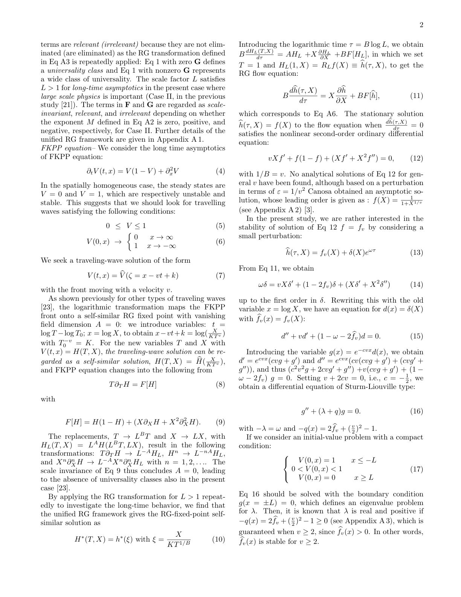
<figcaption class="paper-figure-caption"><b>Fig 1.</b> Low-resolution page preview, page 2</figcaption>
</figure>
<figure class="paper-figure-card">
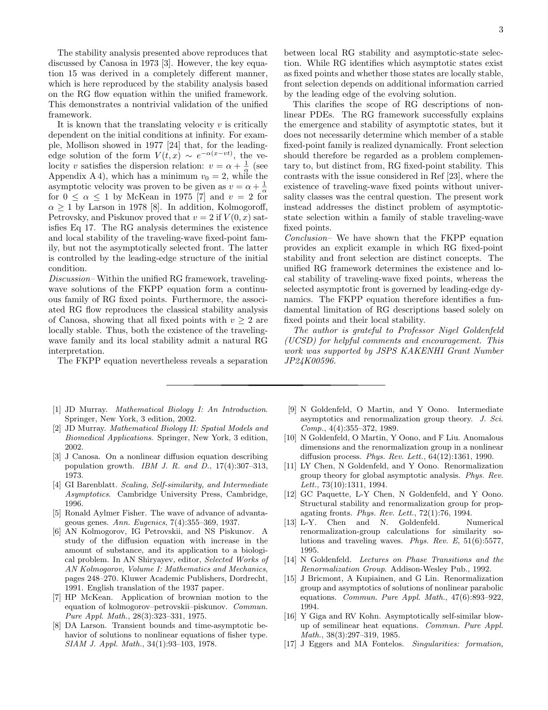
<figcaption class="paper-figure-caption"><b>Fig 2.</b> Low-resolution page preview, page 3</figcaption>
</figure>
<figure class="paper-figure-card">
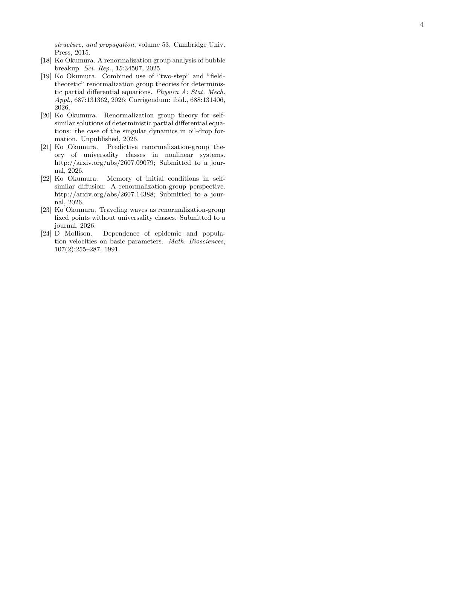
<figcaption class="paper-figure-caption"><b>Fig 3.</b> Low-resolution page preview, page 4</figcaption>
</figure>
<figure class="paper-figure-card">
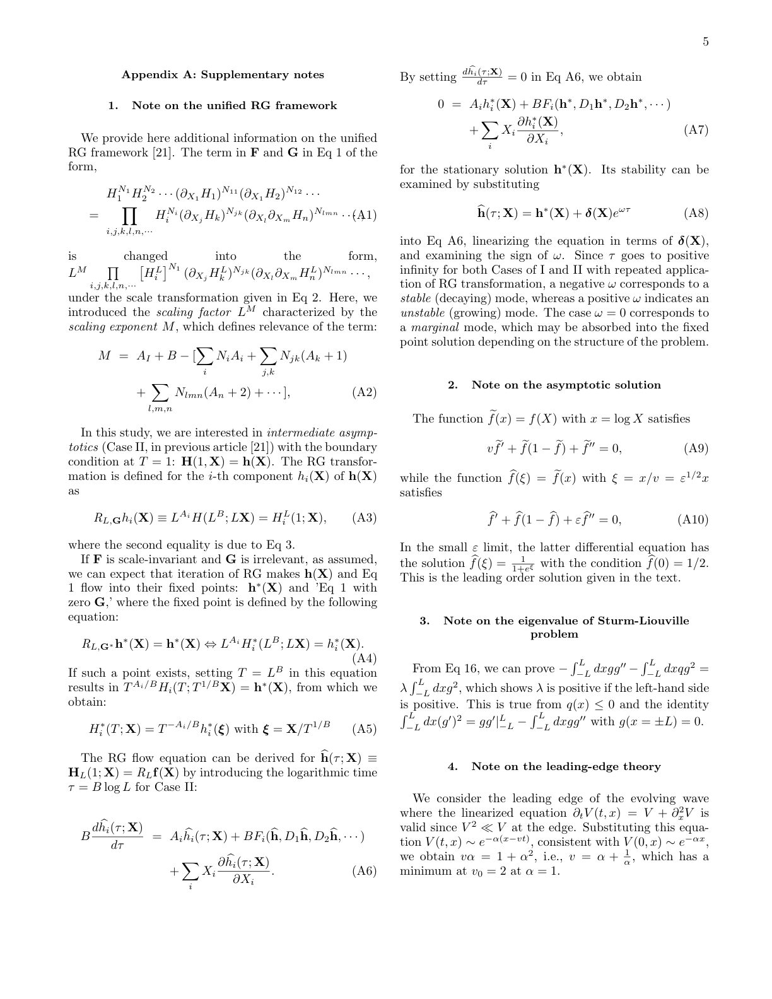
<figcaption class="paper-figure-caption"><b>Fig 4.</b> Low-resolution page preview, page 5</figcaption>
</figure>
</div>

<p><strong>Summary.</strong> This paper investigates whether local stability derived from Renormalization Group theory determines the final state reached by a propagating front described by the FKPP equation. Using RG analysis, the authors confirm that while all fronts with $v \geq 2$ are locally stable, this stability criterion is insufficient to predict which specific asymptotic state will materialize. They conclude that dynamic selection relies on external information carried by the leading edge of the solution.</p>
<p><strong>Why it may be interesting.</strong> The distinction drawn between formal stability (RG) and dynamic selection is crucial in non-equilibrium statistical mechanics, impacting how one models pattern formation or phase transitions where multiple stable states might exist.</p>
<details>
<summary>Detailed structure</summary>
<p><strong>Main problem.</strong> The study aims to determine if the stability of Renormalization-Group (RG) fixed points dictates which asymptotic state is selected during nonlinear wave propagation.</p>
<p><strong>Main result.</strong> The analysis shows that for the FKPP equation, RG fixed-point stability and the actual asymptotically selected front state are distinct concepts. The selection depends on the leading-edge structure of the initial condition, not solely on local stability.</p>
<p><strong>Method.</strong> A unified Renormalization-Group (RG) framework is applied to analyze traveling-wave solutions of nonlinear PDEs, supplemented by linearizing the dynamics at the solution's leading edge.</p>
<p><strong>Model / system.</strong> The primary model is the Fisher–Kolmogorov–Petrovsky–Piskunov (FKPP) equation ($\partial_t V = V(1 -V) + \partial_{xx}V$), which serves as a canonical example for studying front propagation and asymptotic state selection.</p>
<p><strong>Key observables.</strong> Traveling wave velocity ($v$), RG fixed points, local stability eigenvalues ($\omega$).</p>
<p><strong>Important parameters / regimes.</strong> The velocity threshold $v \geq 2$ is highlighted in the stability analysis.</p>
<p><strong>Assumptions / limitations.</strong> The leading-edge dynamics are analyzed under the approximation that $V^2 \ll V$ at the edge. The RG framework itself provides a description of existence and local stability.</p>
<p><strong>Figures summary.</strong> Not specified by the notes.</p>
<p><strong>Paper structure.</strong> The paper first establishes the FKPP equation as the model system, then applies an RG framework to show that solutions form a continuous family of fixed points. It subsequently performs a detailed stability analysis confirming local stability for $v \geq 2$, culminating in the argument that this stability does not determine the final selected state.</p>
</details>
<details>
<summary>Abstract</summary>
<p>The Fisher--Kolmogorov--Petrovsky--Piskunov equation provides a paradigmatic example of front propagation and asymptotic-state selection. Using a unified renormalization-group (RG) framework, we show that its traveling-wave solutions form a continuous family of RG fixed points and that all fronts with $v \ge 2$ are RG-stable. Nevertheless, the asymptotically selected front is not determined by RG stability. The FKPP equation therefore provides an explicit example in which RG fixed-point stability and asymptotic-state selection are distinct concepts.</p>
</details>
<p><sub><a href="#top">↑ back to top</a></sub></p>

<p><a id="paper-2608.00254"></a></p>
<h3 id="interplay-of-spin-orbit-coupling-crystal-field-splitting-and-correlations-a-ghost-rotationally-invariant-slave-boson-treatment"><a href="http://arxiv.org/abs/2608.00254v1">Interplay of spin-orbit coupling, crystal field splitting and correlations: a ghost rotationally invariant slave boson treatment</a></h3>
<p><strong>Authors:</strong> Xue Sun, Walber Hugo Brito, Andreas Gleis, Ran Adler, Tsung-Han Lee, Gabriel Kotliar, Corey Peters<br>
<strong>Type:</strong> theory · <strong>Category:</strong> strongly correlated electrons · <strong>PDF:</strong> <a href="https://arxiv.org/pdf/2608.00254v1">https://arxiv.org/pdf/2608.00254v1</a><br>
<strong>Analysis basis:</strong> full PDF text, analyzed in chunks
<strong>Topic relevance:</strong> <code>Keldysh / 2PI / non-Gaussian methods</code> <strong>3/5</strong> · <code>driven-dissipative phase transition</code> <strong>2/5</strong> · <code>methods for driven-dissipative</code> <strong>2/5</strong> · <code>Kondo &amp; dissipative impurity</code> <strong>1/5</strong> · <code>analog quantum simulation</code> <strong>1/5</strong> · <code>correlated cavity matter</code> <strong>1/5</strong> · <code>non-equilibrium dynamics</code> <strong>1/5</strong></p>
<div class="figure-strip-hint">↔ Scroll figures horizontally</div>
<div class="paper-figures-scroll">
<figure class="paper-figure-card">
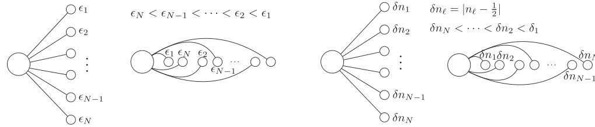
<figcaption class="paper-figure-caption"><b>Fig 1.</b> FIG. 1: Sketch of the different chain orderings of the bath in the star geometry. The large circle denotes the impurity, containing 6 fermionic spin-orbitals. Each small circle denotes a spin-orbital of the bath, and each circle (impurity and bath) corresponds to a site in the MPS. (a) Ordering of bath orbitals by their single-particle energies. (b) Ordering of bath orbitals by occupation. To estimate the occupation of the bath orbitals, we have performed a small-scale DMRG calculation with energy-ordering at bond dimension D ≤300.</figcaption>
</figure>
<figure class="paper-figure-card">
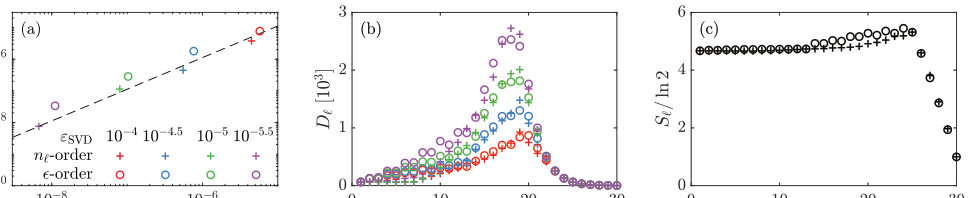
<figcaption class="paper-figure-caption"><b>Fig 2.</b> FIG. 2: (a) Relative error in energy versus discarded weight ξ. Different colors denote different singular-value thresholds εSVD. The symbols denote different bath orderings; circles for ordering by energy and crosses for ordering by occupation. The reference energy E0 is obtained by ξ-extrapolation of the occupation-ordered (crosses) energies. (b) Corresponding bond dimensions, versus MPS bond index ℓ. The bond dimension is strongly peaked at bonds ℓ= 19 and 20, where most of the computational time is spent. (c) Entanglement entropy Sℓat different bonds, computed at εSVD = 10−5.5. At the scale shown here, it would be essentially indistinguishable from that at εSVD = 10−4.</figcaption>
</figure>
<figure class="paper-figure-card">
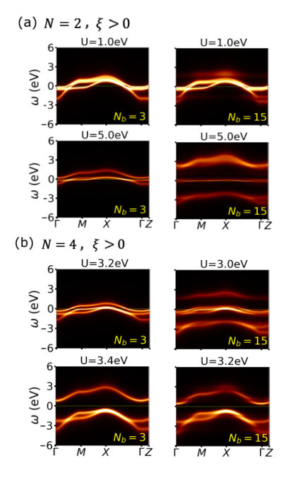
<figcaption class="paper-figure-caption"><b>Fig 3.</b> FIG. 4: Spectral functions of the three-orbital model obtained within GRISB under different fillings N and interactions U, with spin-orbit coupling only (∆= 0, J = 0). In (a) we show the results for N = 2 and (b) for N = 4. The bath size is Nb = 3, 15 respectively from the left to the right. The bare spin-orbit coupling is ξ = 0.2 eV.</figcaption>
</figure>
<figure class="paper-figure-card">
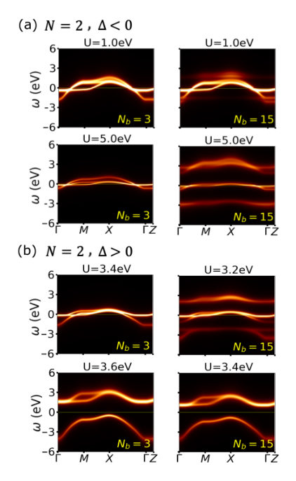
<figcaption class="paper-figure-caption"><b>Fig 4.</b> FIG. 3: Spectral function of the three-orbital model solved by RISB (left, Nb = 3) or GRISB (right, Nb = 15) for different values of the crystal field splitting ∆(ξ = 0, J = 0) in panels (a) and (b) for different values of the interaction U. The bath size is Nb = 3, 15 respectively from the left to the right. The bare crystal field splitting is ∆= −0.2 eV in (a) and ∆= 0.3 eV in (b).</figcaption>
</figure>
<figure class="paper-figure-card">
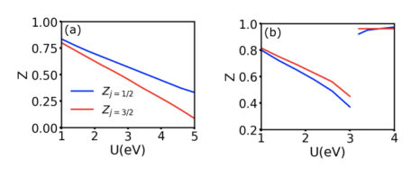
<figcaption class="paper-figure-caption"><b>Fig 5.</b> FIG. 5: Quasiparticle weight Z with fillings (a) N = 2 and (b) N = 4. The bare spin-orbit coupling is ξ = 0.2 eV, ∆= 0, and J = 0).</figcaption>
</figure>
</div>

<p><strong>Summary.</strong> This paper uses the Ghost Rotationally Invariant Slave Boson (GRISB) method to study how spin-orbit coupling, crystal field splitting, and electronic correlations interact in $   ext{Sr}_2   ext{RuO}_4$. By varying key interaction parameters U and J, the authors find that correlation strength dictates whether SOC is enhanced or suppressed. This work provides a detailed theoretical understanding of correlated electron behavior in $5d$ oxides.</p>
<p><strong>Why it may be interesting.</strong> While focused on solid-state physics, the use of advanced quantum embedding techniques like slave bosons and their comparison to DMFT provides a rigorous theoretical framework for handling strong correlations in multi-orbital systems, which shares mathematical complexity with open quantum system treatments.</p>
<details>
<summary>Detailed structure</summary>
<p><strong>Main problem.</strong> The study investigates the complex interplay between spin-orbit coupling (SOC), crystal field splittings (CFS), and electronic correlations in determining the low-energy properties of transition metal oxides.</p>
<p><strong>Main result.</strong> The calculations reveal that increasing the Hubbard interaction parameter U enhances the SOC, whereas increasing the Hund's coupling J suppresses it.</p>
<p><strong>Method.</strong> The research employs the Ghost Rotationally Invariant Slave Boson (GRISB) method, comparing its results against Dynamical Mean Field Theory (DMFT) and experimental data.</p>
<p><strong>Model / system.</strong> The primary model is the $t_{2g}$ Hubbard-Kanamori model, applied specifically to the material $ ext{Sr}_2   ext{RuO}_4$, using parameters derived from DFT and LQSGW calculations.</p>
<p><strong>Key observables.</strong> Static and dynamical observables driven by SOC (e.g., occupation matrix, self-energy), quasiparticle weight ($Z$), Fermi surface shape, and the Lifshitz transition as a function of strain.</p>
<p><strong>Important parameters / regimes.</strong> Hubbard interaction strength ($U$) and Hund's coupling ($J$); low temperature regime; number of ghost orbitals (for convergence study).</p>
<p><strong>Assumptions / limitations.</strong> The GRISB method is used, which involves solving saddle-point equations derived from a free energy functional, assuming site-independence for simplicity.</p>
<p><strong>Paper structure.</strong> The paper structure follows an investigation of the model Hamiltonian components (kinetic, interaction, SOC, CFS), applying the GRISB method to calculate various observables, and analyzing the parameter dependence ($U$ vs $J$) and convergence properties.</p>
</details>
<details>
<summary>Abstract</summary>
<p>We investigate the interplay of spin-orbit coupling, crystal field splittings, and electronic correlations in the $t_{2g}$ Hubbard-Kanamori model within the recently formulated ghost rotationally invariant slave-boson method (GRISB). In particular, we study a tight binding model of Sr$_2$RuO$_4$ with parameters extracted from density functional theory and linearized quasiparticle self-consistent GW (LQSGW) calculations; we study the behavior of different physical quantities as the number of ghosts increases to examine the convergence of GRISB to dynamical mean field theory (DMFT) and experimental results; and we leverage the ability of GRISB to investigate the model over a wide range of parameters at low temperature. In particular, we examine both static and dynamical observables driven by the spin orbit coupling (SOC) and study how they vary as a function of the Hubbard $U$ and Hund's coupling $J$. GRISB converges quickly for most of these observables, and the calculations reveal the following: $U$ enhances the spin-orbit coupling while $J$ suppresses it. We also study the shape of the Fermi surface within different methodologies, and examine the Lifshitz transition which takes place as a function of strain in this material.</p>
</details>
<p><sub><a href="#top">↑ back to top</a></sub></p>

<p><a id="paper-2608.02298"></a></p>
<h3 id="long-and-short-time-linear-response-of-metals-a-geometric-approach"><a href="http://arxiv.org/abs/2608.02298v1">Long and short time linear response of metals: a geometric approach</a></h3>
<p><strong>Authors:</strong> Nishchhal Verma, Raquel Queiroz<br>
<strong>Type:</strong> theory · <strong>Category:</strong> strongly correlated electrons · <strong>PDF:</strong> <a href="https://arxiv.org/pdf/2608.02298v1">https://arxiv.org/pdf/2608.02298v1</a><br>
<strong>Analysis basis:</strong> full PDF text, analyzed in chunks
<strong>Topic relevance:</strong> <code>Keldysh / 2PI / non-Gaussian methods</code> <strong>3/5</strong> · <code>methods for driven-dissipative</code> <strong>2/5</strong> · <code>non-equilibrium dynamics</code> <strong>2/5</strong> · <code>analog quantum simulation</code> <strong>1/5</strong> · <code>correlated cavity matter</code> <strong>1/5</strong> · <code>driven-dissipative phase transition</code> <strong>1/5</strong> · <code>non-equilibrium universality</code> <strong>1/5</strong></p>
<div class="figure-strip-hint">↔ Scroll figures horizontally</div>
<div class="paper-figures-scroll">
<figure class="paper-figure-card">
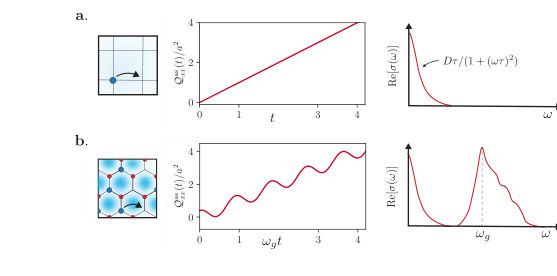
<figcaption class="paper-figure-caption"><b>Fig 1.</b> FIG. 1. Itinerant and bound charge in time and frequency. (a) In a single-orbital metal, dipole fluctuations grow lin- early in time, Qas xx(t) = D t, with the charge stiffness D as the growth rate (middle). The optical conductivity is a sin- gle Drude peak, broadened by a finite scattering time τ into the Lorentzian Dτ/(1 + (ωτ)2) (right). (b) In a multi-orbital metal, bound charge adds oscillations at the inter-band scale ωg on top of the same linear growth. In frequency, these ap- pear as an inter-band absorption peak centered at ωg, well separated from the Drude peak. The ratio D/S1 of Drude to total spectral weight quantifies the fraction of electrons that are itinerant rather than...</figcaption>
</figure>
<figure class="paper-figure-card">
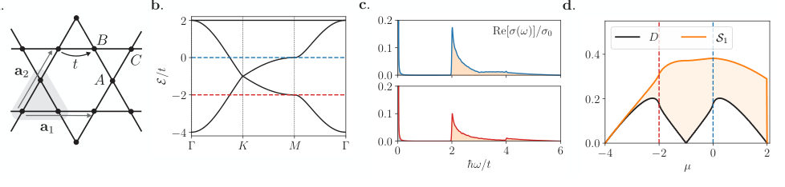
<figcaption class="paper-figure-caption"><b>Fig 2.</b> FIG. 2. Separation of scales in the kagome metal. (a) Kagome lattice with sublattices A, B, C, lattice vectors a1,2, and nearest-neighbor hopping t. (b) Band structure along Γ–K–M–Γ, with the flat band at ε = 2t. Dashed lines mark the two van Hove singularities, at µ = −2t (red) and µ = 0 (blue), positioned symmetrically about the Dirac point. (c) Optical conductivity at the two van Hove fillings. The Fermi surfaces are identical and the Drude peaks nearly coincide, but the inter-band absorption (shaded) is markedly stronger at the upper van Hove filling, closer to the flat band. (d) Drude weight D and total spectral weight S1 as a function of chemical potential µ. The bound-charge...</figcaption>
</figure>
</div>

<p><strong>Summary.</strong> This paper develops a geometric approach using the time-dependent quantum geometric tensor (tQGT) to analyze electronic transport in metals. It challenges the assumption that low-energy metal physics ignores wavefunction geometry by quantifying how this geometry contributes to charge stiffness and spectral weight. The work provides diagnostic tools, like the $D/S_1$ ratio, to probe the balance between itinerant and bound charges.</p>
<p><strong>Why it may be interesting.</strong> Although focused on metals, the rigorous use of geometric tensors and linear response theory provides advanced tools for analyzing spectral weight transfer and charge dynamics in complex quantum materials, which is relevant to understanding strongly correlated phases.</p>
<details>
<summary>Detailed structure</summary>
<p><strong>Main problem.</strong> The paper re-evaluates the role of quantum geometry, captured by the time-dependent quantum geometric tensor (tQGT), in describing electronic transport in metals.</p>
<p><strong>Main result.</strong> It shows that while low-energy response is often thought to ignore wavefunction geometry, the tQGT reveals crucial information about charge stiffness and distinguishes between itinerant and bound charge contributions.</p>
<p><strong>Method.</strong> The authors use linear response theory, calculating correlation functions involving position operators projected onto the electronic states via the tQGT framework.</p>
<p><strong>Model / system.</strong> The study focuses on general metals, comparing results across different systems like 2D Dirac semimetals and 3D Weyl semimetals. The analysis is based on single-particle Green's functions derived from a Hamiltonian H.</p>
<p><strong>Key observables.</strong> Time-dependent quantum geometric tensor (tQGT), Drude weight ($D$), Charge Stiffness ($D_{\mu
u}$), Optical conductivity ($\sigma_{\mu
u}(\omega)$), and the ratio $D/S_1$.</p>
<p><strong>Important parameters / regimes.</strong> Long times vs. short timescales, low-energy response vs. high-energy states, and the limits $q 	o 0$ and $\omega 	o 0$.</p>
<p><strong>Assumptions / limitations.</strong> The derivation of charge stiffness relies on gauge invariance (f-sum rule) in the clean limit; disorder is noted to broaden poles.</p>
<p><strong>Figures summary.</strong> Figure 1 illustrates that dipole fluctuations show linear growth ($Dt$) for single-orbital metals but exhibit oscillations plus linear growth for multi-orbital metals.</p>
<p><strong>Paper structure.</strong> The paper progresses by first establishing the general framework using tQGT, then applying it to analyze longitudinal response constrained by sum rules, and finally contrasting this with Hall response calculations that reveal distinct contributions from Berry curvature and orbital magnetic moments.</p>
</details>
<details>
<summary>Abstract</summary>
<p>The time-dependent quantum geometric tensor, which captures dipole fluctuations of bound electrons, is essential for understanding the electronic properties of insulators, superconductors, and flat bands. It is often considered subleading for low-energy descriptions of metals that are dominated by intra-band processes. Here, we revisit this perspective and highlight scenarios where the quantum geometry of the wavefunctions close to the Fermi surface plays a significant role. We compute the time-dependent quantum geometric tensor for metals, explain its divergence, and contrast it against singular geometric tensors of Dirac and Weyl semi-metals. We identify the ratio of Drude to total spectral weight, $D/\mathcal{S}_1$, as a lattice-scale probe of bound versus itinerant charge, and quantify it in the kagome metal, where the two van Hove fillings respond differently despite identical Fermi surfaces.</p>
</details>
<p><sub><a href="#top">↑ back to top</a></sub></p>

<p><a id="paper-2608.02178"></a></p>
<h3 id="microscopic-dynamics-of-consensus-formation-in-multi-agent-llm-naming-games"><a href="http://arxiv.org/abs/2608.02178v1">Microscopic dynamics of consensus formation in multi-agent LLM Naming Games</a></h3>
<p><strong>Authors:</strong> Cristiano De Nobili, Vijayasri Iyer, Alessandro Codello, Raffaella Burioni<br>
<strong>Type:</strong> theory · <strong>Category:</strong> statistical mechanics · <strong>PDF:</strong> <a href="https://arxiv.org/pdf/2608.02178v1">https://arxiv.org/pdf/2608.02178v1</a><br>
<strong>Analysis basis:</strong> full PDF text, analyzed in chunks
<strong>Topic relevance:</strong> <code>methods for driven-dissipative</code> <strong>3/5</strong> · <code>non-equilibrium universality</code> <strong>3/5</strong> · <code>non-equilibrium dynamics</code> <strong>2/5</strong> · <code>Keldysh / 2PI / non-Gaussian methods</code> <strong>1/5</strong> · <code>correlated / nonlocal dissipation</code> <strong>1/5</strong> · <code>driven-dissipative phase transition</code> <strong>1/5</strong></p>
<div class="figure-strip-hint">↔ Scroll figures horizontally</div>
<div class="paper-figures-scroll">
<figure class="paper-figure-card">
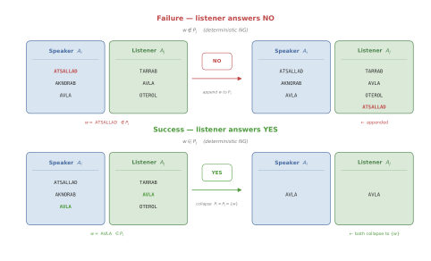
<figcaption class="paper-figure-caption"><b>Fig 1.</b> FIG. 1. Schematic of the Naming Game interaction. In the deterministic NG, the decision step is an inventory check (w ∈ Pj); in the LLM-NG it is replaced by the listener’s LLM call at temperature T.</figcaption>
</figure>
<figure class="paper-figure-card">
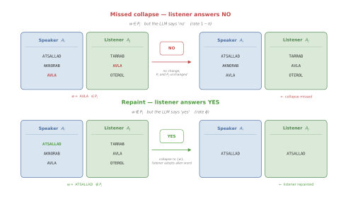
<figcaption class="paper-figure-caption"><b>Fig 2.</b> FIG. 2. The two new interaction channels of the LLM-NG that do not exist in the deterministic NG (Fig. 1). Top: a missed collapse occurs when w ∈Pj but the LLM answers NO, at rate 1−π; the inventories are left unchanged. Bottom: a repaint occurs when w /∈Pj but the LLM answers YES, at rate ϕ; the listener discards its inventory and adopts the alien word w. Together with Fig. 1, these panels enumerate the four channels (TP, FN, FP, TN) into which the LLM-NG interaction decomposes (Sec. III).</figcaption>
</figure>
<figure class="paper-figure-card">
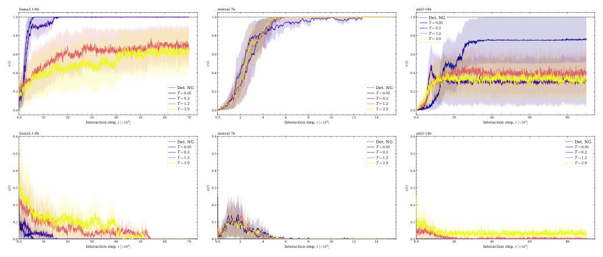
<figcaption class="paper-figure-caption"><b>Fig 3.</b> FIG. 3. Microscopic conditional rates for N = 150 agents at selected temperatures. Top row: consolidation rate π(t) = P(YES | w ∈Pj) for (a) llama3.1:8b, (b) mistral:7b, (c) phi3:14b. Dashed line: deterministic NG (π = 1). Bottom row: repaint rate ϕ(t) = P(YES | w /∈Pj) for (d) llama3.1:8b, (e) mistral:7b, (f) phi3:14b. Dashed line: deterministic NG (ϕ = 0). Shaded bands indicate seed-to-seed variance. Note the different y-axis scales in the bottom row, reflecting the order-of-magnitude difference in repaint noise across models.</figcaption>
</figure>
<figure class="paper-figure-card">
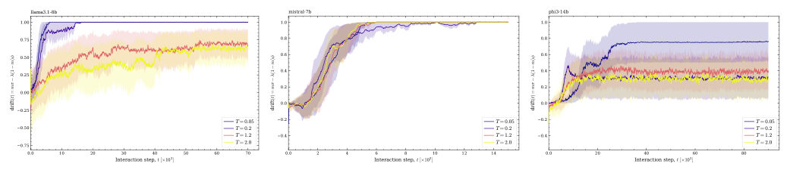
<figcaption class="paper-figure-caption"><b>Fig 4.</b> FIG. 4. Drift proxy ∆(t) = mπ −λ(1−m)ϕ (λ=1) for (a) llama3.1:8b, (b) mistral:7b, (c) phi3:14b. Positive drift implies net ordering.</figcaption>
</figure>
<figure class="paper-figure-card">
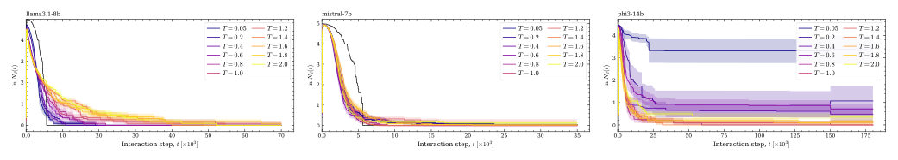
<figcaption class="paper-figure-caption"><b>Fig 5.</b> FIG. 5. Logarithm of the number of distinct words ln Nd(t) for N =150 agents at all explored temperatures (colour-coded from dark = low T to light = high T). Solid black: deterministic NG baseline. (a) llama3.1:8b: standard ordering (high T = slow). (b) mistral:7b: near-deterministic, all T bunched. (c) phi3:14b: inverted ordering (low T = slowest).</figcaption>
</figure>
</div>

<p><strong>Summary.</strong> This paper applies tools from non-equilibrium statistical mechanics to model consensus formation in multi-agent LLM populations. By analyzing the system's dynamics through two key conditional rates, it establishes that decoding temperature acts as a measurable control parameter. The work provides a quantitative taxonomy for understanding how stochasticity dictates collective ordering in AI systems.</p>
<p><strong>Why it may be interesting.</strong> The framework provides a quantitative statistical physics toolkit—using concepts like critical lines, scaling exponents ($eta$, $\alpha$), and mean-field theory—to analyze emergent collective behavior in complex AI systems.</p>
<details>
<summary>Detailed structure</summary>
<p><strong>Main problem.</strong> The study investigates the microscopic mechanisms by which internal stochasticity shapes macroscopic ordering during consensus formation among decentralized populations of Large Language Model (LLM) agents.</p>
<p><strong>Main result.</strong> Consensus is always reached across three distinct listener regimes, and decoding temperature ($T$) emerges as a quantifiable, architecture-dependent control parameter governing the dynamics.</p>
<p><strong>Method.</strong> The analysis employs mean-field theory applied to a minimal LLM Naming Game (LLM-NG), decomposing interactions into two conditional rates ($\pi(T)$ and $\phi(T)$).</p>
<p><strong>Model / system.</strong> The system is an LLM Naming Game where agent decisions are stochastic single-token calls at temperature $T$. The dynamics are modeled by tracking the evolution of in-inventory ($P_j$) and out-inventory states.</p>
<p><strong>Key observables.</strong> Conditional rates ($\pi(T), \phi(T)$), consensus time scaling exponents ($eta(T)$, $\alpha$), and the drift proxy $\Delta(t)$.</p>
<p><strong>Important parameters / regimes.</strong> Decoding temperature ($T$); The ordering condition is generalized to a critical line in the $(\pi, \phi)$ plane.</p>
<p><strong>Assumptions / limitations.</strong> The setup is deliberately minimal, excluding prompt engineering or multi-turn memory; mean-field theory and two-rate approximations are used for simplification.</p>
<p><strong>Figures summary.</strong> Figures illustrate the schematic of the deterministic Naming Game and highlight two new LLM-NG channels: 'Missed collapse' and 'Repaint,' which are crucial for understanding stochasticity.</p>
<p><strong>Paper structure.</strong> The paper develops a microscopic parametrization using $(\pi, \phi)$ rates to analyze consensus dynamics. It applies mean-field theory to derive ordering conditions and then characterizes different LLM architectures (Llama, Mistral, Phi3) based on how their $(\pi, \phi)$ pair responds to temperature $T$.</p>
</details>
<details>
<summary>Abstract</summary>
<p>Decentralized populations of Large Language Model (LLM) agents can spontaneously reach consensus on shared conventions, yet the microscopic mechanisms by which their internal stochasticity shapes macroscopic ordering remain unexplored. We study a minimal LLM Naming Game in which the listener's decision is a single-token LLM call at decoding temperature $T$, replacing the inventory check of the deterministic Naming Game. Each interaction decomposes into an in-inventory and an out-inventory channel with conditional rates $π(T)\!\equiv\!P(\text{YES}\mid w\in P_j)$ and $φ(T)\!\equiv\!P(\text{YES}\mid w\notin P_j)$, whose balance controls an ordering-disordering drift. A mean-field theory of the two-rate dynamics yields an analytical ordering condition that generalizes the consensus threshold of the stochastic Naming Game to a critical line in the $(π,φ)$ plane. Across three open-weight architectures, consensus is always reached, but through three distinct listener regimes: permissive (repaint-noise dominated), near-deterministic, and conservative (missed-collapse dominated). The effective finite-size exponent $β(T)$ in $t_{\rm conv}\!\sim\!N^β$ shifts with temperature, and the temperature-sensitivity $α$ in $t_c\!\sim\!e^{αT}$ ranges from ${\approx}\,0.67$ to ${\approx}\,0$ across architectures. Decoding temperature thus emerges as an architecture-dependent control parameter for decentralized LLM populations, quantitatively characterized by the statistical-physics toolkit.</p>
</details>
<p><sub><a href="#top">↑ back to top</a></sub></p>

<p><a id="paper-2608.01833"></a></p>
<h3 id="tunneling-the-loss-landscape-bypassing-memorization-with-monte-carlo-parameter-swapping"><a href="http://arxiv.org/abs/2608.01833v1">Tunneling the Loss Landscape: Bypassing Memorization with Monte Carlo Parameter Swapping</a></h3>
<p><strong>Authors:</strong> Lai Shun Chan, Xiaotian Zhang, Yue Shang, Ge Zhang, Entao Yang<br>
<strong>Type:</strong> both · <strong>Category:</strong> disordered systems and neural networks · <strong>PDF:</strong> <a href="https://arxiv.org/pdf/2608.01833v1">https://arxiv.org/pdf/2608.01833v1</a><br>
<strong>Analysis basis:</strong> full PDF text, analyzed in chunks
<strong>Topic relevance:</strong> <code>methods for driven-dissipative</code> <strong>3/5</strong> · <code>driven-dissipative phase transition</code> <strong>2/5</strong> · <code>non-equilibrium dynamics</code> <strong>2/5</strong> · <code>non-equilibrium universality</code> <strong>2/5</strong> · <code>Frenkel-Kontorova</code> <strong>1/5</strong> · <code>scars &amp; prethermalization</code> <strong>1/5</strong></p>
<div class="figure-strip-hint">↔ Scroll figures horizontally</div>
<div class="paper-figures-scroll">
<figure class="paper-figure-card">
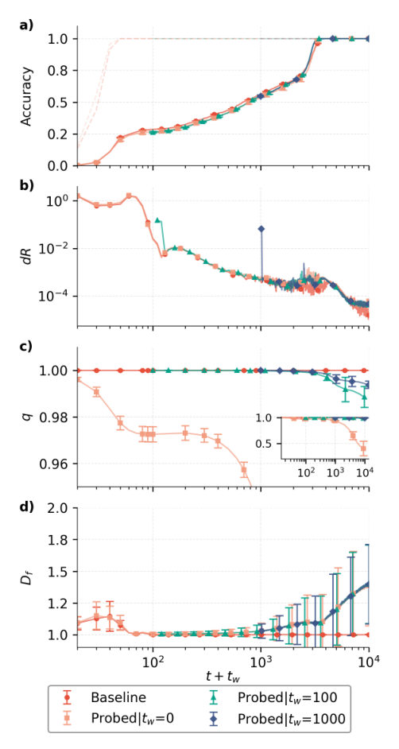
<figcaption class="paper-figure-caption"><b>Fig 1.</b> Figure 1: Comparison across waiting times. All data are from AdamW with learning rate 10−2 and weight decay 10−1, optimized for shortest grokking time. Baseline uses AdamW; probed model adds small Gaussian noise to test trajectory sensitivity. The x-axis is aligned to t + tw. (a) Test accuracy (solid lines show Test accuracy; translucent line shows training accuracy).(b) Parameter mobility, error bars were omitted to declutter the plot and provide a clearer view of the decreasing ∆R. Notable fluctuations are observed in the range from 0 to 102. (c) RC average across layers, with the insert showing the full range of replica decorrelation. (d) FD of Path average across layers. Occasionally,...</figcaption>
</figure>
<figure class="paper-figure-card">
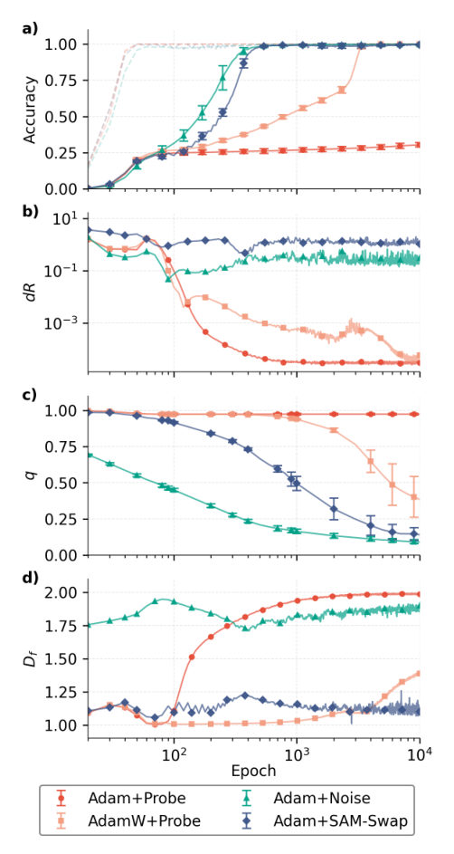
<figcaption class="paper-figure-caption"><b>Fig 2.</b> Figure 2: Comparison across perturbation methods: All models uses learning rate of 10−2, while AdamW addi- tionally applies weight decay of 10−1. Both models are probed using a weak Gaussian probe (σ = 10−5), whereas Adam+Noise employs additive Gaussian perturbations with σ = 10−2 and Adam+Swap uses the proposed SAM-Swap. All hyperparameters are selected to minimize grokking time. (a) Test accuracy (solid lines show Test accuracy; translu- cent line shows training accuracy) b) Parameter Mobility (c) Replica Correlation from tw = 0. (d) Fractal dimension of path. For fig (b) and (d), error bars were omitted in the plots to avoid excessive visual clutter. The Adam+Noise and Adam+Swap settings...</figcaption>
</figure>
</div>

<p><strong>Summary.</strong> This work reinterprets neural network 'grokking' through the lens of computational glass relaxation theory. By developing diagnostics like Parameter Mobility (PM), Replica Correlation (RC), and Fractal Dimension (FD), the authors show that memorization corresponds to a kinetically arrested, glassy state in parameter space. They propose SAM-Swap, an optimization technique inspired by physical Monte Carlo swaps, which successfully accelerates generalization by promoting necessary random exploration.</p>
<p><strong>Why it may be interesting.</strong> The direct application of concepts from glassy physics—such as replica correlation and fractal dimension analysis—to characterize the optimization path of deep learning models provides a powerful, physically grounded lens for understanding generalization failure modes.</p>
<details>
<summary>Detailed structure</summary>
<p><strong>Main problem.</strong> The paper addresses 'grokking,' where neural networks memorize training data before abruptly generalizing, framing this phenomenon using analogies from statistical physics.</p>
<p><strong>Main result.</strong> Standard optimization traps the network in a kinetic arrested state characterized by collapsed parameter mobility and low fractal dimension; introducing State-Aware Monte Carlo Parameter Swapping (SAM-Swap) accelerates generalization by promoting random exploration.</p>
<p><strong>Method.</strong> The authors introduce a three-component framework using Parameter Mobility (PM), Replica Correlation (RC), and Trajectory Fractal Dimension (FD) to quantitatively diagnose training dynamics, comparing these metrics against interventions like SAM-Swap.</p>
<p><strong>Model / system.</strong> The study analyzes the training dynamics of neural networks, specifically on modular arithmetic tasks, treating the loss landscape as an effective energy surface analogous to a physical glass system undergoing relaxation.</p>
<p><strong>Key observables.</strong> Parameter Mobility (PM), Replica Correlation (RC), and Fractal Dimension (FD) are used to characterize the geometry and dynamics of the parameter space trajectory.</p>
<p><strong>Important parameters / regimes.</strong> The analysis distinguishes between different dynamic regimes, such as the 'glassy' kinetic arrest state versus accelerated relaxation achieved through random exploration.</p>
<p><strong>Assumptions / limitations.</strong> The core hypothesis links delayed generalization directly to dynamic trapping (kinetic arrest) in the optimization landscape, which is validated by comparing PM, RC, and FD signatures against physical glass dynamics models.</p>
<p><strong>Figures summary.</strong> Figures illustrate the transition of observables like PM and $D_f$ during training, showing collapse/plateauing during memorization and recovery upon intervention.</p>
<p><strong>Paper structure.</strong> The paper first establishes the theoretical analogy between grokking and computational glass relaxation. It then introduces the three-component diagnostic framework (PM, RC, FD) to empirically validate this theory on network training dynamics, culminating in the proposal and testing of SAM-Swap as a corrective mechanism.</p>
</details>
<details>
<summary>Abstract</summary>
<p>Grokking is a striking phenomenon in neural network training, where a model can undergo a prolonged period of pure memorization before abrupt generalization. While previous works have attempted to interpret it through classical machine learning mechanisms like weight norm, recent research draws an analogy from statistical physics, framing grokking as a form of computational glass relaxation. This theory defines the initial memorization as a result of <code>fast cooling' where the training loss is reduced so quickly that a glass state is formed, followed by a</code>slow relaxation' towards final generalization. Although providing a unifying framework for representative grokking theories, this perspective has remained largely at the theoretical on macroscopic level without direct empirical validation on training dynamics. Here we introduce a three-component framework to directly characterize the training dynamics via parameter mobility (PM), and two representative measurements from glassy dynamics: replica correlation (RC) and fractal dimension (FD). We demonstrate that standard optimization presents clear signatures of glass dynamics and inherently traps the grokking network in a kinetic arrested memorization state with a collapsed mobility, strong history dependence, and channel-like motions. This quantitative agreement motivates us to introduce State-Aware Monte Carlo Parameter Swapping (SAM-Swap), an optimization plug-in that can accelerate generalization, inspired by swap Monte Carlo algorithm widely used in glass dynamics. Comparing SAM-Swap, weight decay, and Gaussian gradient noise, we find that accelerated generalization is consistently associated with random exploration in the parameter space, similar to diffusion in physics.</p>
</details>
<p><sub><a href="#top">↑ back to top</a></sub></p>

<p><a id="paper-2608.02462"></a></p>
<h3 id="nanohertz-pendulum-toward-macroscopic-entanglement-under-structural-damping"><a href="http://arxiv.org/abs/2608.02462v1">Nanohertz Pendulum toward Macroscopic Entanglement under Structural Damping</a></h3>
<p><strong>Authors:</strong> Azusa Sawada, Hina Nakano, Kanta Watanabe, Gaku Ohashi, Shota Okumura, Nobuyuki Matsumoto<br>
<strong>Type:</strong> both · <strong>Category:</strong> other · <strong>PDF:</strong> <a href="https://arxiv.org/pdf/2608.02462v1">https://arxiv.org/pdf/2608.02462v1</a><br>
<strong>Analysis basis:</strong> full PDF text, analyzed in chunks
<strong>Topic relevance:</strong> <code>quantum measurements</code> <strong>3/5</strong> · <code>measurement-induced transitions</code> <strong>2/5</strong> · <code>correlated / nonlocal dissipation</code> <strong>1/5</strong> · <code>driven-dissipative phase transition</code> <strong>1/5</strong> · <code>entanglement &amp; information structure</code> <strong>1/5</strong> · <code>methods for driven-dissipative</code> <strong>1/5</strong> · <code>non-equilibrium dynamics</code> <strong>1/5</strong></p>
<div class="figure-strip-hint">↔ Scroll figures horizontally</div>
<div class="paper-figures-scroll">
<figure class="paper-figure-card">
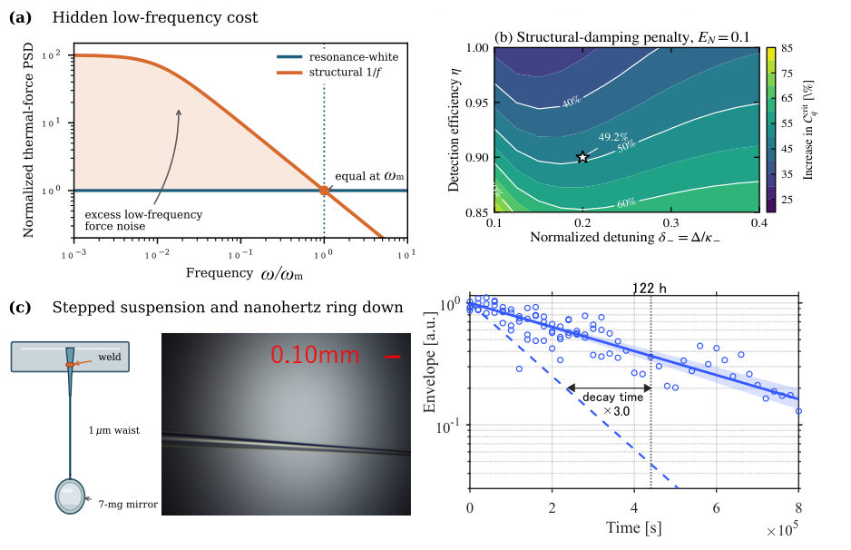
<figcaption class="paper-figure-caption"><b>Fig 1.</b> FIG. 1. Modeled entanglement cost and measured suspension gain. (a) Reference and regularized structural baths matched at ωm; shading marks the excess low-frequency force noise. (b) Structural-noise increase in the critical cooperativity for EN = 0.1, relative to the resonance-white bath, over normalized detuning δ−and detection efficiency η; the star marks (δ−, η) = (0.2, 0.9). (c) Suspension schematic, fiber micrograph, and ring-down of the 7-mg mirror. The solid curve is the joint fit to the stepped-suspension data, and the shaded band shows the variation obtained by shifting Γ by the quoted leave-one- record-out jackknife standard error. The dashed curve is calculated from the measured...</figcaption>
</figure>
<figure class="paper-figure-card">
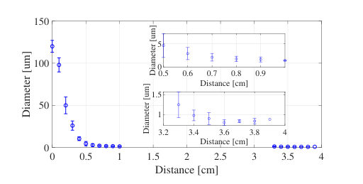
<figcaption class="paper-figure-caption"><b>Fig 2.</b> FIG. 2. Diameter profile of the stepped fused-silica fiber. Profiles measured for five fibers are shown; the insets enlarge the 1 µm waist and the thick upper section. The pendulum used for the ring-down measurement was welded at a section with diameter approximately 60 µm.</figcaption>
</figure>
</div>

<p><strong>Summary.</strong> The research addresses the challenge of structural damping degrading quantum entanglement in macroscopic pendulums. By developing a theoretical model quantifying this penalty, the authors designed and experimentally implemented a novel stepped fused-silica suspension. This device achieved a measured mechanical gain significantly exceeding the required threshold, advancing the feasibility of high-fidelity quantum measurements at room temperature.</p>
<p><strong>Why it may be interesting.</strong> This work represents a crucial intersection of quantum sensing and mechanical engineering, demonstrating how advanced structural design (stepped fibers) can overcome fundamental noise limitations imposed by material damping to push macroscopic quantum measurements toward higher entanglement regimes.</p>
<details>
<summary>Detailed structure</summary>
<p><strong>Main problem.</strong> The primary challenge is quantifying and mitigating the entanglement penalty imposed by the low-frequency tail (colored noise) originating from structural damping on macroscopic quantum entanglement measurements.</p>
<p><strong>Main result.</strong> The authors successfully realized a 7-mg pendulum with a measured suspension gain ($G_q \simeq 2.5$) that significantly exceeds the theoretical requirement ($G_{	ext{req}} = 1.49$) needed to maintain measurable entanglement in the presence of structural noise.</p>
<p><strong>Method.</strong> The work combines advanced quantum modeling using closed-loop state-space dynamics (Ornstein-Uhlenbeck baths) with high-precision experimental measurements of mechanical dissipation via ring-down analysis on a custom stepped fiber suspension.</p>
<p><strong>Model / system.</strong> The physical system is a macroscopic pendulum suspended by a stepped fused-silica fiber, used in a continuous measurement setup. The theoretical model incorporates the full dynamics of the coupled cavity and mechanical modes, including structural damping modeled via auxiliary Ornstein-Uhlenbeck states.</p>
<p><strong>Key observables.</strong> Logarithmic negativity ($  ext{EN}$), required suspension gain ($G_{   ext{req}}$), measured energy decay rate ($\Gamma/2\pi = 361(39)$ nHz), and the achieved mechanical suspension gain ($G_q \simeq 2.5$).</p>
<p><strong>Important parameters / regimes.</strong> Detection loss ($\eta=0.9$), required structural-noise penalty factor (leading to $G_{	ext{req}}=1.49$), and the pendulum quality factor ($Q = 7.3(8) 	imes 10^6$).</p>
<p><strong>Assumptions / limitations.</strong> The analysis relies on modeling the structural bath using auxiliary Ornstein-Uhlenbeck states, and a key limitation noted is that residual loss from the upper attachment weld significantly lowers the achievable quality factor compared to ideal material limits.</p>
<p><strong>Figures summary.</strong> Figures illustrate the excess low-frequency force noise tail due to structural damping (Fig. 1a), quantify the required gain versus detection efficiency (Fig. 1b), and show schematics/measurements of the stepped fiber suspension used for dissipation characterization (Fig. 1c).</p>
<p><strong>Paper structure.</strong> The paper progresses from theoretical modeling of entanglement degradation due to colored noise in a closed-loop system, deriving a quantitative requirement ($G_{	ext{req}}$), to presenting the experimental realization using a novel stepped fiber suspension, and finally comparing the measured performance gain ($G_q$) against this derived threshold.</p>
</details>
<details>
<summary>Abstract</summary>
<p>Pendulums are attractive for macroscopic quantum control because gravity dilution reduces mechanical loss, while the $1/f$ force-noise spectrum associated with structural damping allows nearly lossless trapping to suppress the thermal noise sampled at an upward-shifted resonance. The same $1/f$ spectrum, however, produces a low-frequency tail that penalizes entanglement. With $10\%$ detection loss, we find that this tail raises the required back-action-to-thermal force-noise ratio by about $50\%$, corresponding to a required suspension gain $G_{\rm req}=1.49$. To overcome this structural-noise penalty, we realize a $7$-mg pendulum suspended by a stepped fused-silica fiber, with an energy-decay rate $Γ/2π=361(39)$ nHz ($Q\equivω_0/Γ=7.3(8)\times10^6$) at $ω_0/2π=2.63$ Hz. The reduction in $ω_0Γ$ yields a measured gain $G_q\simeq2.5$ relative to the previous monolithic device, exceeding the requirement.</p>
</details>
<p><sub><a href="#top">↑ back to top</a></sub></p>

<p><a id="paper-2608.01312"></a></p>
<h3 id="all-electric-topological-phase-transitions-in-proximity-coupled-bilayer-mnbi2te4-heterostructures"><a href="http://arxiv.org/abs/2608.01312v1">All-Electric Topological Phase Transitions in Proximity-Coupled Bilayer MnBi2Te4 Heterostructures</a></h3>
<p><strong>Authors:</strong> Basavaraja G, Mukul Kabir<br>
<strong>Type:</strong> theory · <strong>Category:</strong> other · <strong>PDF:</strong> <a href="https://arxiv.org/pdf/2608.01312v1">https://arxiv.org/pdf/2608.01312v1</a><br>
<strong>Analysis basis:</strong> full PDF text, analyzed in chunks
<strong>Topic relevance:</strong> <code>spintronics-quantum-optics interface</code> <strong>3/5</strong> · <code>driven-dissipative phase transition</code> <strong>2/5</strong> · <code>Kondo &amp; dissipative impurity</code> <strong>1/5</strong> · <code>analog quantum simulation</code> <strong>1/5</strong> · <code>exotic spin models in light-matter</code> <strong>1/5</strong> · <code>non-equilibrium dynamics</code> <strong>1/5</strong></p>
<div class="figure-strip-hint">↔ Scroll figures horizontally</div>
<div class="paper-figures-scroll">
<figure class="paper-figure-card">
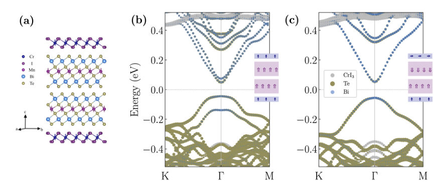
<figcaption class="paper-figure-caption"><b>Fig 1.</b> Figure 1. Controlling interlayer antiferromagnetic coupling in bilayer MTI via magnetic proximity to 2D FMI. (a) Schematic of a sandwich heterostructure CrI3/2SL-MnBi2Te4/CrI3, where proximity-induced exchange at the FMI/MTI interfaces is used to tune topological invariants by controlling the interlayer magnetic coupling in the MTI. (b) Ferromagnetic exchange at the FMI/MTI interface stabilizes ferromagnetic interlayer coupling in 2SL-MnBi2Te4 [inset, (↑/⇑· ⇑/↑)], yielding the corresponding band structure. (c) Upon electrically tuning the magnetic anisotropy of CrI3 from out-of-plane to in-plane, the interlayer coupling in the MTI reverses to antiferromagnetic order (inset), and the...</figcaption>
</figure>
<figure class="paper-figure-card">
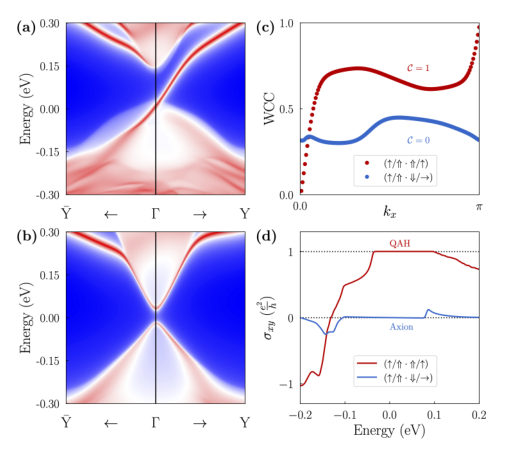
<figcaption class="paper-figure-caption"><b>Fig 2.</b> Figure 2. Switching topological invariants via gate-tunable proximity exchange. Interlayer magnetic coupling controls the surface-state topology of the MTI. (a) The ferromagnetic (↑/ ⇑· ⇑/ ↑) configuration hosts a single chiral edge mode with C = 1. (b) Switching the FMI anisotropy to the in- plane direction preserves a gapped surface spectrum in the (↑/ ⇑· ⇓/ →) configuration. While C = 0 for this state, the Fu-Kane Z2 invariant remains nontrivial. (c) The calculated evolution of WCC along closed paths in the BZ confirms the corresponding topological classification. (d) The anomalous Hall conductivity, obtained by integrating the Berry curva- ture over BZ, is quantized at σxy = e2/h for...</figcaption>
</figure>
<figure class="paper-figure-card">
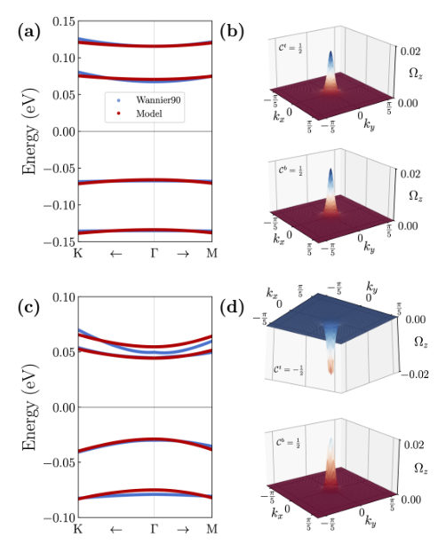
<figcaption class="paper-figure-caption"><b>Fig 3.</b> Figure 3. Low-energy 4×4 effective Hamiltonian at the Γ point capturing the essential physics of the topological phase transition. Interpolated bands near the massive Dirac point yield the effective Hamiltonian parameters for the (a) ferro- magnetic [(Mt, Mb, V ) = (102, 91, −28) meV] and (b) anti- ferromagnetic [(Mt, Mb, V ) = (−60, 42, −14) meV] configu- rations. The fitted vF ∼3.7×105 m/s is in good agreement with the value reported by angle-resolved photoemission spec- troscopy [17]. (c) The layer-resolved Berry curvature for the FM configuration exhibits Ωt/b z &gt; 0, yielding half-quantized layer Hall responses on each surface with Ct/b = + 1</figcaption>
</figure>
</div>

<p><strong>Summary.</strong> The paper presents a method to achieve all-electric control over topological phase transitions in magnetic topological insulators ($   ext{MnBi}_2 ext{Te}_4$). By sandwiching the material between gate-tunable ferromagnetic layers, researchers can switch reversibly between Quantum Anomalous Hall and axion insulating states without requiring massive external magnetic fields. This breakthrough solves a major bottleneck for scalable, high-temperature topological electronics.</p>
<p><strong>Why it may be interesting.</strong> This work provides a concrete pathway to engineer topological states using purely electrical means, which is highly relevant for developing low-power quantum electronic devices that might interact with superconducting qubits or other quantum hardware components.</p>
<details>
<summary>Detailed structure</summary>
<p><strong>Main problem.</strong> The primary challenge addressed is overcoming the need for extreme external magnetic fields (&gt;9 T) to induce topological phase transitions in $   ext{MnBi}_2 ext{Te}_4$. The goal is to achieve field-free, all-electric control over switching between Quantum Anomalous Hall (QAH) and axion insulating states.</p>
<p><strong>Main result.</strong> The authors demonstrate that gate-tunable magnetic anisotropy in a proximate ferromagnetic insulator ($    ext{CrI}_3$) can dynamically modulate the exchange coupling, enabling reversible switching between QAH ($C=1$) and axion insulator ($C=0$) phases using only an electric field.</p>
<p><strong>Method.</strong> The study employs complementary first-principles calculations (DFT) with effective Hamiltonian modeling. Topological characterization is performed by calculating the Chern number via Berry flux/Wannier Charge Centres, alongside Monte Carlo simulations for thermal stability.</p>
<p><strong>Model / system.</strong> The system is a bilayer $   ext{MnBi}_2 ext{Te}_4$ heterostructure sandwiched between two ferromagnetic insulators ($   ext{FMI}/   ext{MTI}/   ext{FMI}$). The low-energy physics is modeled using an effective Hamiltonian that incorporates surface Dirac fermions, Zeeman coupling from the Mn spins, and electrostatic potential terms.</p>
<p><strong>Key observables.</strong> Quantized Anomalous Hall Conductivity ($\sigma_{xy} = e^2/h$ for QAH state) or zero-Hall plateau ($\sigma_{xy}=0$ for axion insulator); Chern number ($C=1$ vs $C=0$).</p>
<p><strong>Important parameters / regimes.</strong> The control mechanism relies on modulating the proximity-induced exchange bias via electrostatic gating, which controls the interlayer coupling strength ($J_{\perp}$). The magnetic ordering temperature is also shown to be elevated.</p>
<p><strong>Assumptions / limitations.</strong> The approach assumes that the short-range nature of the proximity effect allows for the maintenance of the intrinsic electronic structure of the $   ext{MnBi}_2 ext{Te}_4$ film while enabling external control.</p>
<p><strong>Figures summary.</strong> Figures illustrate the schematic tuning of interlayer coupling from AFM to FM via $    ext{CrI}_3$, and show evidence of quantized QAH edge modes ($C=1$) versus zero-Hall plateaus ($ ext{axion}$) depending on the magnetic configuration.</p>
<p><strong>Paper structure.</strong> The paper establishes the limitations of previous high-field switching methods, develops a model based on proximity coupling via an $  ext{FMI}$ gate, calculates topological invariants (Chern number) for both FM (QAH) and AFM (axion) couplings, and concludes by demonstrating all-electric reversibility.</p>
</details>
<details>
<summary>Abstract</summary>
<p>The intrinsic magnetic topological insulator MnBi2Te4, in the two-dimensional limit, hosts thickness dependent axion and quantum anomalous Hal (QAH) insulating states governed by antiferromagnetic interlayer coupling. However, controlled interconversion between these phases typically requires extreme external magnetic fields exceeding 9 T, limiting practical tunability. Using complementary first-principles calculations and effective Hamiltonian modeling, we demonstrate a field-free, reversible mechanism to engineer topological phase transitions by exploiting magnetic proximity at the interfaces with a ferromagnetic insulator. Gate-tunable magnetic anisotropy within the ferromagnetic insulator dynamically modulates the proximity-induced exchange bias, enabling all-electric switching of interlayer coupling and band topology in ultrathin MnBi2Te4. Crucially, long-range Heisenberg Monte Carlo simulations reveal that the magnetic ordering temperature of the encapculated MnBi2Te4 film is dramatically elevated. By eliminating the high-field requirement and simultaneously improving thermal stability, this gate-tunable paradigm solves a critical bottleneck in topological physics and offers a viable route toward scalable, high-temperature topological electronics.</p>
</details>
<p><sub><a href="#top">↑ back to top</a></sub></p>

<p><a id="paper-2608.01989"></a></p>
<h3 id="coarse-graining-and-the-classification-of-long-range-correlations-in-quantum-field-theory"><a href="http://arxiv.org/abs/2608.01989v1">Coarse-Graining and the Classification of Long-Range Correlations in Quantum Field Theory</a></h3>
<p><strong>Authors:</strong> Jinku Guo<br>
<strong>Type:</strong> theory · <strong>Category:</strong> statistical mechanics · <strong>PDF:</strong> <a href="https://arxiv.org/pdf/2608.01989v1">https://arxiv.org/pdf/2608.01989v1</a><br>
<strong>Analysis basis:</strong> full PDF text, analyzed in chunks
<strong>Topic relevance:</strong> <code>Keldysh / 2PI / non-Gaussian methods</code> <strong>3/5</strong> · <code>analog quantum simulation</code> <strong>1/5</strong> · <code>correlated / nonlocal dissipation</code> <strong>1/5</strong> · <code>driven-dissipative phase transition</code> <strong>1/5</strong> · <code>methods for driven-dissipative</code> <strong>1/5</strong> · <code>non-equilibrium dynamics</code> <strong>1/5</strong> · <code>non-equilibrium universality</code> <strong>1/5</strong></p>
<div class="figure-strip-hint">↔ Scroll figures horizontally</div>
<div class="paper-figures-scroll">
<figure class="paper-figure-card">
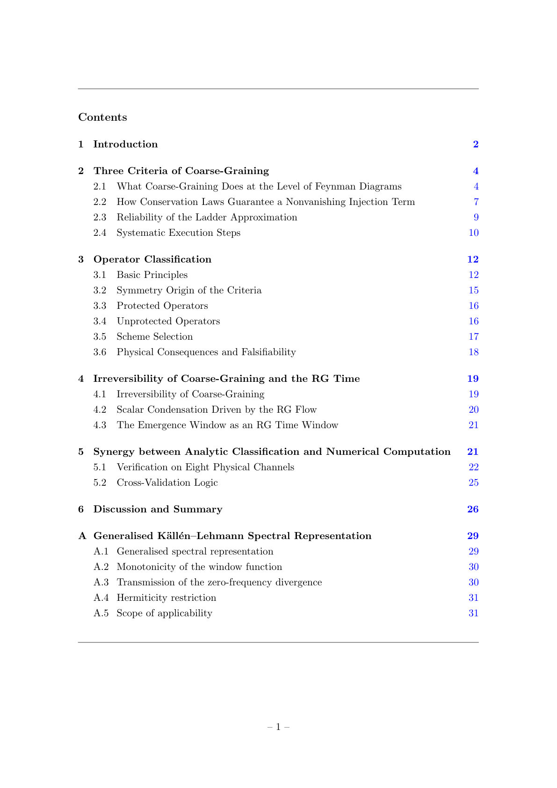
<figcaption class="paper-figure-caption"><b>Fig 1.</b> Low-resolution page preview, page 2</figcaption>
</figure>
<figure class="paper-figure-card">
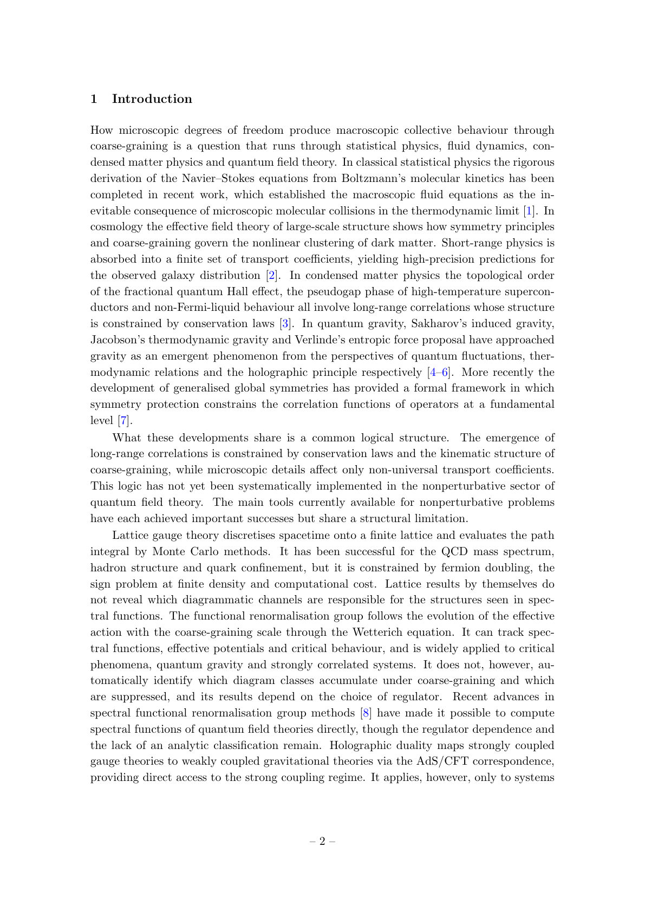
<figcaption class="paper-figure-caption"><b>Fig 2.</b> Low-resolution page preview, page 3</figcaption>
</figure>
<figure class="paper-figure-card">
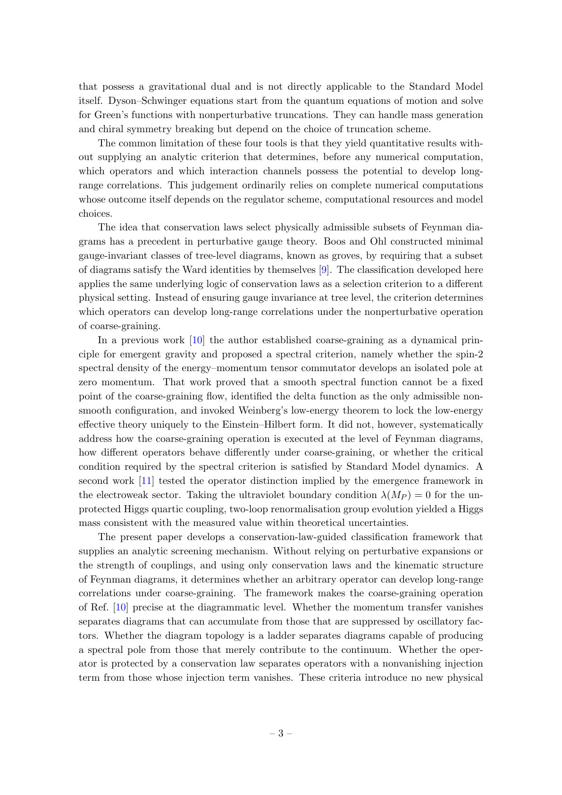
<figcaption class="paper-figure-caption"><b>Fig 3.</b> Low-resolution page preview, page 4</figcaption>
</figure>
<figure class="paper-figure-card">
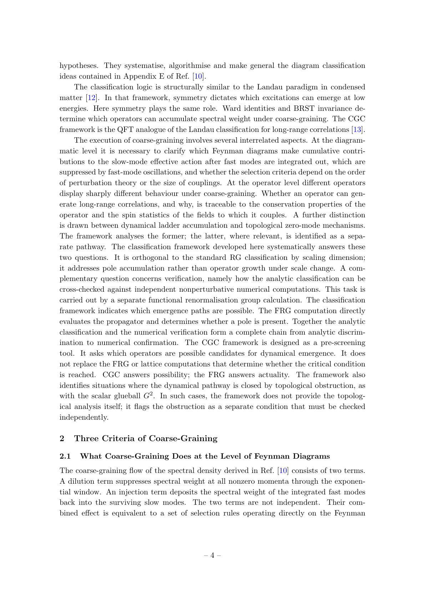
<figcaption class="paper-figure-caption"><b>Fig 4.</b> Low-resolution page preview, page 5</figcaption>
</figure>
<figure class="paper-figure-card">
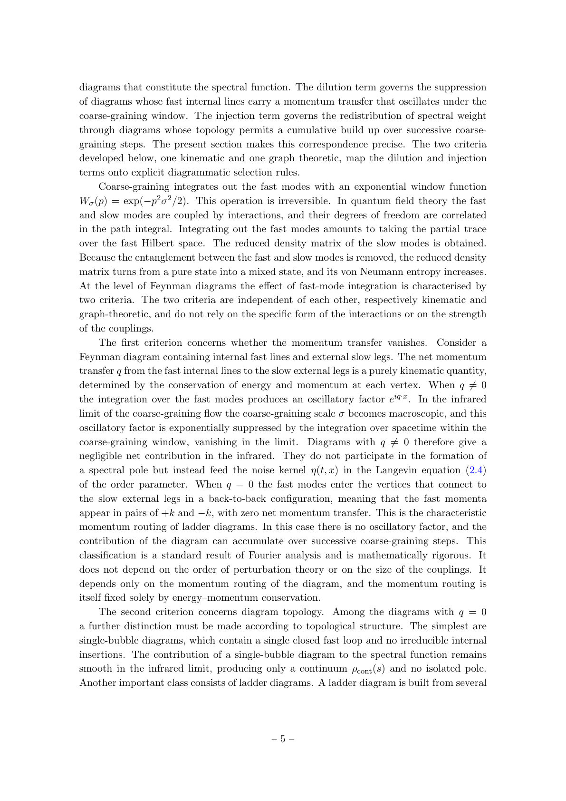
<figcaption class="paper-figure-caption"><b>Fig 5.</b> Low-resolution page preview, page 6</figcaption>
</figure>
</div>

<p><strong>Summary.</strong> This paper introduces a rigorous, conservation-law-guided framework to classify how long-range correlations develop during coarse-graining in QFT. It systematically analyzes Feynman diagrams based on momentum transfer, topology, and symmetry protection to predict if spectral poles—indicative of phase transitions or critical behavior—can emerge. This provides a powerful theoretical tool for understanding emergent physics across various quantum systems.</p>
<p><strong>Why it may be interesting.</strong> The methodology provides a powerful, general theoretical tool that bridges concepts from quantum field theory renormalization group flow with established techniques in classical statistical mechanics for analyzing critical phenomena.</p>
<details>
<summary>Detailed structure</summary>
<p><strong>Main problem.</strong> The paper develops a systematic framework to classify how long-range correlations emerge during coarse-graining operations in Quantum Field Theory (QFT). It aims to determine the conditions under which spectral poles form, analogous to phase transitions.</p>
<p><strong>Main result.</strong> A conservation-law-guided classification establishes that pole formation depends on three criteria: nonvanishing injection terms from symmetry protection, specific diagram topologies (ladder diagrams), and kinematic constraints related to zero momentum transfer. This framework provides an analytic screening mechanism for possible emergence paths.</p>
<p><strong>Method.</strong> The authors employ a coarse-graining approach using window functions, analyzing Feynman diagrams at the level of their topology and symmetries (Ward/BRST identities). The method draws strong analogies to classical statistical physics derivations like deriving fluid equations from molecular kinetics.</p>
<p><strong>Model / system.</strong> The theory is applied generally to QFT, examining channels like the energy-momentum tensor ($T_{\mu
u}$) and gauge field strength ($F^2$). It references concepts applicable to strongly correlated systems, such as those studied in condensed matter physics (e.g., fractional quantum Hall effect).</p>
<p><strong>Key observables.</strong> Spectral poles ($\delta(p^2)$ terms), the injection term magnitude, and the sign of the single-bubble contribution.</p>
<p><strong>Important parameters / regimes.</strong> The critical condition for pole development ($1 - V \cdot \Pi_0 = 0$ or similar forms) and the window function parameter $\sigma$.</p>
<p><strong>Assumptions / limitations.</strong> The analysis relies on linear response approximations in some sections, and it assumes that conservation laws provide sufficient constraints to classify the emergence path, leaving the final nonperturbative calculation open.</p>
<p><strong>Figures summary.</strong> Not specified by notes; the structure is described as a decision tree or pipeline of criteria.</p>
<p><strong>Paper structure.</strong> The paper builds its argument through sequential application of three criteria: 1) Kinematic constraints (momentum transfer $q=0$ required for accumulation), 2) Graph-theoretic analysis (distinguishing continuum vs. pole-forming topologies via ladder resummation), and 3) Conservation laws (ensuring nonvanishing matrix elements).</p>
</details>
<details>
<summary>Abstract</summary>
<p>A conservation-law-guided classification framework is developed for the execution of coarse-graining operations in quantum field theory. Coarse-graining produces a selection at the level of Feynman diagrams. Diagrams with nonzero momentum transfer are suppressed by oscillatory factors, zero-momentum-transfer ladder diagrams can accumulate through geometric series resummation to produce a spectral pole, and single-bubble topologies contribute only to the continuum. Conservation laws govern this classification. For operators protected by a Ward identity, the matrix element at zero momentum is guaranteed to be nonvanishing. For operators protected by BRST symmetry, the Slavnov-Taylor identities provide no mandatory suppression. The two cases differ in the strength of the algebraic guarantee. For unprotected operators the injection term vanishes and the spectral function remains continuous. The sign of the single-bubble contribution is determined by spin statistics. A positive sign leads to amplificative feedback in the ladder resummation, a negative sign leads to suppressive feedback. These two attributes, the nonvanishing of the injection term and the sign of the single-bubble contribution, are the defining criteria of the classification. As a direct application, a general classification of local operators is established within the emergence framework and verified on eight physical channels and three known solvable systems. The framework indicates which emergence paths are possible for each operator; whether the critical condition is reached is left for independent nonperturbative computation. The logical structure of this classification is parallel to the strategy used in deriving fluid equations from molecular kinetic theory in classical statistical physics.</p>
</details>
<p><sub><a href="#top">↑ back to top</a></sub></p>

<p><a id="paper-2608.02185"></a></p>
<h3 id="a-standard-quantum-mechanical-treatment-to-rationalize-the-delayed-choice-quantum-eraser"><a href="http://arxiv.org/abs/2608.02185v1">A Standard Quantum Mechanical Treatment to Rationalize the Delayed-Choice Quantum Eraser</a></h3>
<p><strong>Authors:</strong> Vipul Badhan, Pranvi, Samreet Dhillon, Bindiya Arora<br>
<strong>Type:</strong> theory · <strong>Category:</strong> other · <strong>PDF:</strong> <a href="https://arxiv.org/pdf/2608.02185v1">https://arxiv.org/pdf/2608.02185v1</a><br>
<strong>Analysis basis:</strong> full PDF text, analyzed in chunks
<strong>Topic relevance:</strong> <code>interference shaping light</code> <strong>3/5</strong> · <code>quantum measurements</code> <strong>3/5</strong> · <code>entanglement &amp; information structure</code> <strong>1/5</strong> · <code>measurement-induced transitions</code> <strong>1/5</strong></p>
<div class="figure-strip-hint">↔ Scroll figures horizontally</div>
<div class="paper-figures-scroll">
<figure class="paper-figure-card">
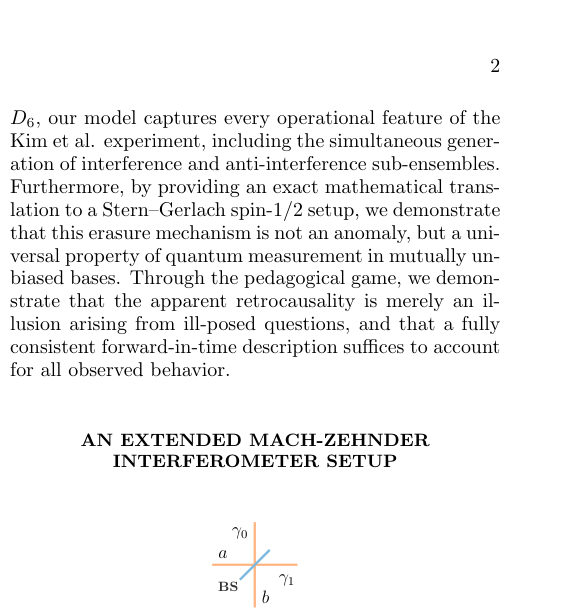
<figcaption class="paper-figure-caption"><b>Fig 1.</b> FIG. 1: Schematic representation of a standard beam splitter BS. Input spatial modes |a⟩and |b⟩undergo a unitary transformation, yielding output spatial modes |γ0⟩and |γ1⟩</figcaption>
</figure>
<figure class="paper-figure-card">
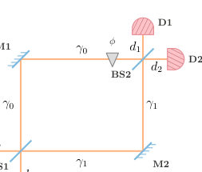
<figcaption class="paper-figure-caption"><b>Fig 2.</b> FIG. 2: Standard Mach-Zehnder interferometer (MZI). An incident photon entering via input mode |a⟩is split by BS1 into spatial modes |γ0⟩and |γ1⟩. After reflection at mirrors M1 and M2 and undergoing a relative phase shift ϕ, the paths recombine at BS2. Output modes |d1⟩ and |d2⟩are registered by detectors D1 and D2, respectively.</figcaption>
</figure>
<figure class="paper-figure-card">
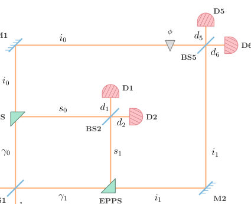
<figcaption class="paper-figure-caption"><b>Fig 3.</b> FIG. 3: Extended MZI configuration with entangled photon pair sources (EPPS) situated along modes |γ0⟩ and |γ1⟩generate signal (|s0⟩, |s1⟩) and idler (|i0⟩, |i1⟩) modes. Signal modes recombine at BS2 leading to detectors D1 and D2. Idler modes undergo recombination at BS5 yielding output modes |d5⟩and |d6⟩registered by detectors D5 and D6. Coincidence detections between (D1, D5) and (D2, D6) highlight complementary anti-interference and interference sub-ensembles.</figcaption>
</figure>
<figure class="paper-figure-card">
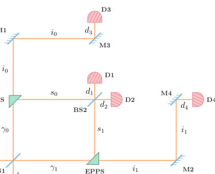
<figcaption class="paper-figure-caption"><b>Fig 4.</b> FIG. 4: Extended MZI configuration with idler modes |i0⟩and |i1⟩directed by mirrors M3 and M4 straight to detectors D3 (mode |d3⟩) and D4 (mode |d4⟩). A click at D3 or D4 provides path information for the corresponding signal photon at D1 or D2.</figcaption>
</figure>
<figure class="paper-figure-card">
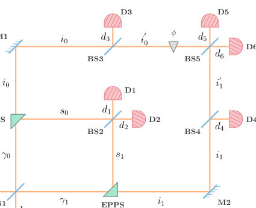
<figcaption class="paper-figure-caption"><b>Fig 5.</b> FIG. 5: Extended MZI obtained by replacing mirrors M3 and M4 in the case II with 50:50 beam splitters BS3 and BS4 unifies both operational modes (case I and case II) into a single schematic. Reflected idler modes (|d3⟩, |d4⟩) yield which-path measurements at detectors D3 and D4, while transmitted modes (|i′ 0⟩, |i′ 1⟩) recombine at BS5 for erasure measurements at D5 and D6. Arbitrarily extending the idler optical path lengths ensures signal registration at D1/D2 strictly precedes the idler measurement choice.</figcaption>
</figure>
</div>

<p><strong>Summary.</strong> This paper resolves the paradoxes of the delayed-choice quantum eraser by showing that the choice between measurement types is merely a selection of measurement bases within standard quantum mechanics. By modeling the system with an extended MZI and entangled pairs, the authors demonstrate that interference patterns are fully explained without invoking retrocausality. The work emphasizes that apparent paradoxes stem from conceptual misunderstandings about time and causality in quantum theory.</p>
<p><strong>Why it may be interesting.</strong> It provides a rigorous theoretical grounding for interpreting foundational quantum optics experiments, clarifying that apparent non-local effects are artifacts of ill-posed questions rather than violations of causality.</p>
<details>
<summary>Detailed structure</summary>
<p><strong>Main problem.</strong> To resolve the apparent paradoxes associated with delayed-choice quantum eraser experiments using standard quantum mechanics, specifically addressing the illusion of retrocausality.</p>
<p><strong>Main result.</strong> The choice between which-path and erasure detectors is shown to be equivalent to choosing measurement bases, proving that quantum erasure is an expected result of measuring entangled states within a forward-in-time framework.</p>
<p><strong>Method.</strong> The analysis uses standard quantum mechanical formalism applied to an extended Mach-Zehnder interferometer (MZI) setup involving entangled photon pairs.</p>
<p><strong>Model / system.</strong> The core system is the MZI, modeled with an Entangled Photon-Pair Source (EPPS), which allows tracking correlations between signal and idler paths. The analysis maps the experiment to a two-way Stern-Gerlach framework for conceptual clarity.</p>
<p><strong>Key observables.</strong> Interference patterns (constructive/destructive) observed at various detectors, joint detection probabilities for coincident clicks in different measurement bases.</p>
<p><strong>Important parameters / regimes.</strong> The beam splitter parameter $   heta$ controls the operational regime of the setup, allowing selection between path-erasure ($  heta=0$), which-way ($   heta=\pi$), and delayed choice ($ heta=\pi/2$).</p>
<p><strong>Assumptions / limitations.</strong> The approach relies on standard quantum mechanics formalism and assumes lossless operation of optical components; it explicitly avoids retrocausal frameworks.</p>
<p><strong>Figures summary.</strong> Figures illustrate the MZI setup, showing interference conditions for different path choices. The paper also uses a ball-and-box game analogy to model the delayed choice correlation.</p>
<p><strong>Paper structure.</strong> The paper progresses by first establishing basic MZI behavior, then analyzing specific cases (path-erasure vs. which-way) using entangled pairs, culminating in a unified treatment of the delayed choice mechanism via basis selection.</p>
</details>
<details>
<summary>Abstract</summary>
<p>Ever since the proposal of delayed choice quantum erasure and subsequent realization in the experiment by Kim et al., the interpretation and implications of delayed-choice experiments have remained a subject of intense foundational debate. This paper resolves the apparent paradox attached to the experiment using standard quantum mechanics. Using an extended Mach-Zehnder interferometer which captures every operational feature of the original experiment, we show that choosing between which-path and erasure detectors is simply a choice of measurement bases, which does not rewrite a photon's past. Furthermore, by mapping the experiment to a two-way Stern-Gerlach framework, we prove that quantum erasure is an expected result of measuring entangled states, not a physical anomaly. Ultimately, through a pedagogical game, we illustrate that the illusion of retrocausality arises from asking illegitimate questions, and that a forward-in-time description is entirely sufficient to explain the logic.</p>
</details>
<p><sub><a href="#top">↑ back to top</a></sub></p>

<p><a id="paper-2608.00467"></a></p>
<h3 id="breakdown-of-universal-whirling-order-in-a-heisenberg-tsai-type-approximant"><a href="http://arxiv.org/abs/2608.00467v1">Breakdown of Universal Whirling Order in a Heisenberg Tsai-Type Approximant</a></h3>
<p><strong>Authors:</strong> Farid Labib, Guillaume Beutier, Alessandro Bombardi, Marc de Boissieu, Ryuji Tamura<br>
<strong>Type:</strong> experiment · <strong>Category:</strong> strongly correlated electrons · <strong>PDF:</strong> <a href="https://arxiv.org/pdf/2608.00467v1">https://arxiv.org/pdf/2608.00467v1</a><br>
<strong>Analysis basis:</strong> full PDF text, analyzed in chunks
<strong>Topic relevance:</strong> <code>exotic spin models in light-matter</code> <strong>3/5</strong> · <code>spintronics-quantum-optics interface</code> <strong>3/5</strong> · <code>analog quantum simulation</code> <strong>2/5</strong></p>
<div class="figure-strip-hint">↔ Scroll figures horizontally</div>
<div class="paper-figures-scroll">
<figure class="paper-figure-card">
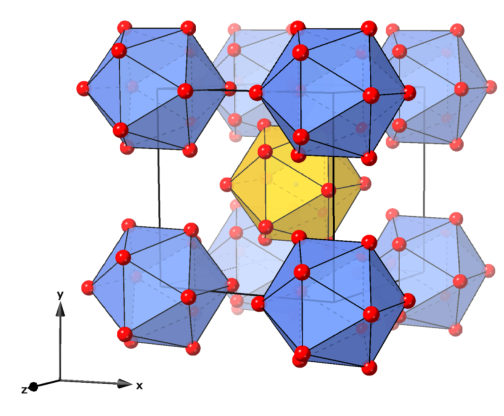
<figcaption class="paper-figure-caption"><b>Fig 1.</b> FIG. 1. Arrangement of Gd ions on the icosahedron shells in the cubic unit cell of Au–Al–Gd 1/1 AC (refer to [6] for structural details). The colors reflect the antiferromagnetic coupling between corner and body-center icosahedra of the cubic lattice, although all icosahedra are structurally identi- cal.</figcaption>
</figure>
<figure class="paper-figure-card">
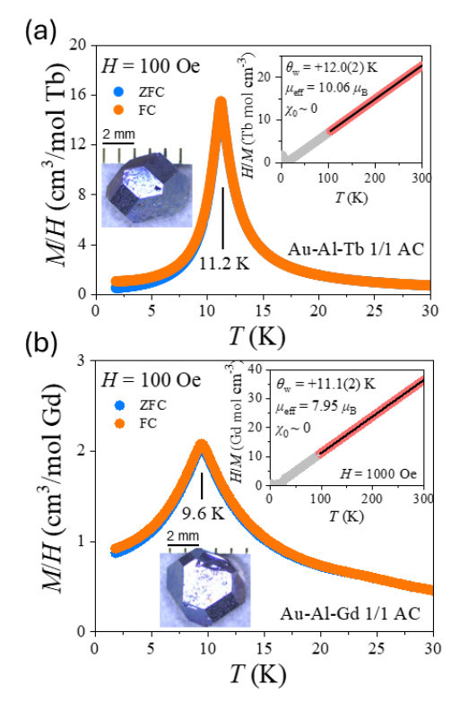
<figcaption class="paper-figure-caption"><b>Fig 2.</b> FIG. 2. Low temperature magnetic susceptibility M/H of (a)Au–Al–Tb, and (b) Au–Al–Gd 1/1 AC single crystals un- der H = 100 Oe. The insets in (a) and (b) show correspond- ing inverse magnetic susceptibilities (H/M) measured under H = 1000 Oe as well as the optical microscopu images of the corresponding single crystals.</figcaption>
</figure>
<figure class="paper-figure-card">
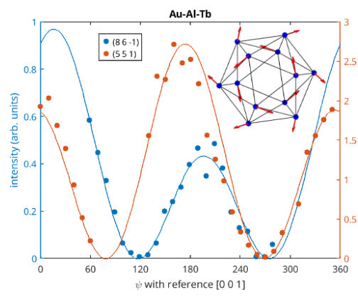
<figcaption class="paper-figure-caption"><b>Fig 3.</b> FIG. 3. Azimuthal scans of the (8, 6, −1) and (5, 5, 1) mag- netic reflections of Au–Al–Tb. Dots: experimental; plain curves: models corresponding to the whirling magnetic or- der proposed in Ref. [18] and depicted in inset (view from a [1, 1, 1] axis): the spins are tilted by 86◦from the fivefold axes.</figcaption>
</figure>
<figure class="paper-figure-card">
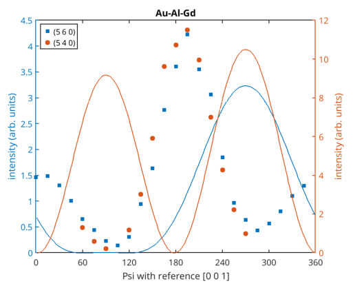
<figcaption class="paper-figure-caption"><b>Fig 4.</b> FIG. 4. Azimuthal scan of the (5, 6, 0) as (5, 4, 0) magnetic reflections of Au–Al–Gd. Dots: experimental; plain curves: models corresponding to the whirling magnetic order pro- posed in Ref. [18] (see also inset of FIG. 3).</figcaption>
</figure>
</div>

<p><strong>Summary.</strong> This work uses X-ray magnetic scattering to compare two related quasicrystal approximants, Au–Al–Tb and Au–Al–Gd. The experiments reveal that while the non-Heisenberg system exhibits a predictable 'whirling' magnetic order, the Heisenberg counterpart shows a distinctly different state. This strongly indicates that spin anisotropy is the critical factor determining the magnetic ground state, invalidating any purely geometric explanation for the observed magnetism.</p>
<p><strong>Why it may be interesting.</strong> While focused on magnetism in solids, the core concept—that a simple geometric model fails when a specific interaction parameter (anisotropy) is varied—is analogous to how subtle changes in coupling constants or dimensionality can fundamentally alter quantum phases in correlated electron models.</p>
<details>
<summary>Detailed structure</summary>
<p><strong>Main problem.</strong> To determine if the proposed 'whirling magnetic order' observed in non-Heisenberg Tsai-type quasicrystal approximants is solely dependent on crystal geometry or if spin anisotropy plays a crucial role.</p>
<p><strong>Main result.</strong> The apparent universality of whirling order breaks down when comparing Au–Al–Tb (anisotropic) and Au–Al–Gd (nearly isotropic), demonstrating that spin anisotropy, not just cluster geometry, dictates the magnetic ground state.</p>
<p><strong>Method.</strong> X-ray Resonant Magnetic Scattering (XRMS) measurements were performed on single crystals, supplemented by SQUID magnetometry and analysis of azimuthal angle dependence.</p>
<p><strong>Model / system.</strong> The study investigates Au–Al–R (R = Gd, Tb) 1/1 approximants, comparing the strongly anisotropic $  ext{Au–Al–Tb}$ system against its nearly isotropic Heisenberg counterpart, $    ext{Au–Al–Gd}$.</p>
<p><strong>Key observables.</strong> Azimuthal dependence of magnetic scattering intensity for specific reflections (e.g., (5 4 0), (5 6 0)), and the temperature dependence of magnetization ($M/H$).</p>
<p><strong>Important parameters / regimes.</strong> Spin anisotropy, crystal structure geometry (Tsai-cluster approximants), and the comparison between Heisenberg vs. non-Heisenberg limits.</p>
<p><strong>Assumptions / limitations.</strong> The initial hypothesis was that magnetic order is universal based on cluster geometry; this assumption is challenged by experimental results.</p>
<p><strong>Figures summary.</strong> FIG. 3 shows azimuthal scans for $ ext{Au–Al–Tb}$ agreeing with the whirling model, while FIG. 4 shows partial scans for $ ext{Au–Al–Gd}$ that systematically contradict the universal whirling-order predictions.</p>
<p><strong>Paper structure.</strong> The paper establishes the context of expected magnetic universality based on geometry, presents comparative experimental data from XRMS on two different rare-earth substitutions (Tb vs. Gd), and concludes by contrasting the results to pinpoint spin anisotropy as the necessary physical ingredient.</p>
</details>
<details>
<summary>Abstract</summary>
<p>Noncoplanar whirling magnetic order has recently been proposed as a universal magnetic state in non-Heisenberg Tsai-type quasicrystal approximants. Here, X-ray resonant magnetic scattering measurements on Heisenberg and non-Heisenberg Au-Al-R (R = Gd, Tb) 1/1 approximants reveal a clear breakdown of this universality in the Heisenberg limit. While the non-Heisenberg Au-Al-Tb system is well described by the previously identified whirling magnetic structure, the Heisenberg Au-Al-Gd counterpart exhibits qualitatively different azimuthal-angle dependences that are incompatible with the universal whirling-order model. Despite nearly identical crystal structures and comparable magnetic energy scales, the two systems stabilize distinct antiferromagnetic ground states with the same propagation vector k = (1, 0, 0), demonstrating that the apparent universality of whirling order is not a consequence of Tsai-cluster geometry alone but requires spin anisotropy. These results further reveal the emergence of a competing manifold of nearly degenerate magnetic states in the Heisenberg limit.</p>
</details>
<p><sub><a href="#top">↑ back to top</a></sub></p>

<p><a id="paper-2608.01882"></a></p>
<h3 id="gap-distributions-between-successive-personal-bests-in-cricket-data-and-models"><a href="http://arxiv.org/abs/2608.01882v1">Gap distributions between successive personal bests in cricket: Data and Models</a></h3>
<p><strong>Authors:</strong> Priyanka D. Bhoyar, Prashant M. Gade<br>
<strong>Type:</strong> both · <strong>Category:</strong> statistical mechanics · <strong>PDF:</strong> <a href="https://arxiv.org/pdf/2608.01882v1">https://arxiv.org/pdf/2608.01882v1</a><br>
<strong>Analysis basis:</strong> full PDF text, analyzed in chunks
<strong>Topic relevance:</strong> <code>non-equilibrium universality</code> <strong>3/5</strong> · <code>non-equilibrium dynamics</code> <strong>2/5</strong> · <code>Keldysh / 2PI / non-Gaussian methods</code> <strong>1/5</strong> · <code>driven-dissipative phase transition</code> <strong>1/5</strong> · <code>methods for driven-dissipative</code> <strong>1/5</strong></p>
<div class="figure-strip-hint">↔ Scroll figures horizontally</div>
<div class="paper-figures-scroll">
<figure class="paper-figure-card">
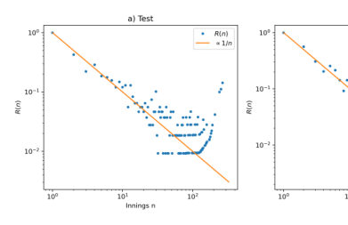
<figcaption class="paper-figure-caption"><b>Fig 1.</b> Figure 1: Shows the plot of probability R(n) of setting a new record in the nth inning on log-log scale for (a) Test Matches (b) ODI Matches and (c) T20 Matches. Early innings follow an approximate 1/n behavior, while deviations appear in the tail due to heterogeneity in career lengths.</figcaption>
</figure>
<figure class="paper-figure-card">
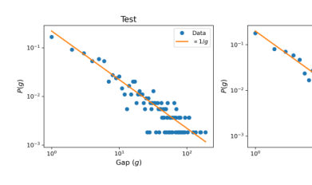
<figcaption class="paper-figure-caption"><b>Fig 2.</b> Figure 2: Normalized probability Mass function (PMF) of the gap distribution for the empirical Test, ODI, and T20 matches. The distribution shows heavy-tailed behavior and deviations from the classical 1/g record statistics prediction.</figcaption>
</figure>
<figure class="paper-figure-card">
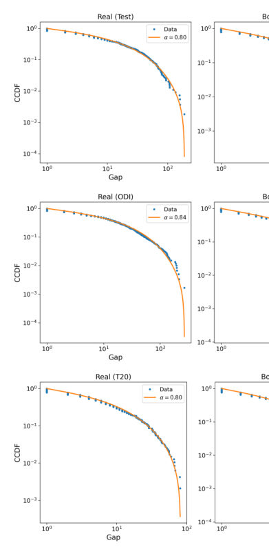
<figcaption class="paper-figure-caption"><b>Fig 3.</b> Figure 3: Complementary cumulative distribution functions (CCDFs) of inter-record gaps for (a) Test, (b) ODI, and (c) T20 cricket careers. The distributions exhibit broad tails spanning several orders of magnitude, indicating substantial variability in the waiting times between successive personal best performances. The solid lines represent maximum- likelihood fits to the truncated power law form P(g) ∼g−αe−λg. The estimated parameters are α = 0.799, λ = 0.0180 (Test), α = 0.843, λ = 0.01447 (ODI), and α = 0.799, λ = 0.035 (T20) for real data. For bootstrap-shuffle the parameters are α = 0.952, λ = 0.008 for test, α = 0.979, λ = 0.008 for ODI and α = 0.939, λ = 0.021 for T20. For reverse...</figcaption>
</figure>
</div>

<p><strong>Summary.</strong> This paper analyzes the gaps between personal best records in cricket to test if performance milestones follow simple random models. By comparing real career data against shuffled versions, the authors find that the observed scaling behavior is significantly altered when temporal ordering is destroyed. This demonstrates that record progression retains crucial information about the non-stationary, path-dependent nature of human athletic development.</p>
<p><strong>Why it may be interesting.</strong> While applied to sports, the methodology—analyzing deviations from stationary assumptions in complex sequential data—is highly relevant to non-equilibrium statistical mechanics problems involving path dependence (e.g., aging systems or memory effects in disordered materials).</p>
<details>
<summary>Detailed structure</summary>
<p><strong>Main problem.</strong> The study investigates whether the gap distribution between successive personal best performances (milestones) in cricket reflects simple stochastic processes or retains information about the complex temporal structure of an athlete's career.</p>
<p><strong>Main result.</strong> Empirical gap distributions are better described by a truncated power law with exponents significantly different from classical predictions, and this deviation is strongly correlated with preserving the temporal ordering of performances.</p>
<p><strong>Method.</strong> The authors compared empirical inter-record gap distributions against null models, including bootstrap-shuffled careers (destroying time order) and time-reversed careers, using statistical fitting techniques like MLE.</p>
<p><strong>Model / system.</strong> The system is cricket performance data, analyzing the number of innings (gaps) between successive personal best scores for leading players in Test, ODI, and T20 formats. The theoretical baseline is the i.i.d. assumption predicting $P(g) \sim 1/g$.</p>
<p><strong>Key observables.</strong> The gap distribution $P(g)$ and its fitted exponent $\alpha$ from a truncated power law fit ($P(g) \propto g^{-\alpha}e^{-\lambda g}$).</p>
<p><strong>Important parameters / regimes.</strong> The scaling exponents $\alpha$ (empirical vs. shuffled), the cutoff parameter $\lambda$, and the comparison to the classical prediction ($\alpha=1$).</p>
<p><strong>Assumptions / limitations.</strong> Classical theory assumes i.i.d. observations, which is violated by real sporting careers due to learning, aging, and non-stationarity.</p>
<p><strong>Figures summary.</strong> Figures compare the normalized Probability Mass Functions (PMFs) of inter-record gaps for original, shuffled, and reversed careers, illustrating how temporal ordering affects the tail behavior.</p>
<p><strong>Paper structure.</strong> The paper establishes the classical prediction based on i.i.d. processes, analyzes empirical data using truncated power law fitting, and then systematically tests null hypotheses by shuffling or reversing the time sequence to isolate the role of temporal structure.</p>
</details>
<details>
<summary>Abstract</summary>
<p>Successive personal best performances provide a natural measure of progression in an athlete's career. Classical record theory predicts a universal gap distribution, $P(g)\sim 1/g$, for independent and identically distributed (i.i.d.) sequences. However, sporting careers are shaped by learning, aging, changes in ability, and external influences that violate these assumptions. We investigate the statistics of inter-record gaps, defined as the number of innings between successive personal best scores, in cricket. Using career records of leading Test, ODI, and T20 players obtained from ESPN Cricinfo. We find that the empirical distributions are well described by truncated power law $P(g) \propto g^{-α} e^{-λg}$ with exponents in the range (0.799 $\leq α\leq$ 0.843). Much of this deviation disappears when the temporal ordering of innings is destroyed, indicating that career evolution plays a key role in shaping record occurrence. Bootstrap-shuffled careers, which preserve individual score distributions and career lengths while removing temporal ordering, yield significantly larger exponents ($α\approx 0.939\text{--}0.979$). These findings show that the progression of personal best performances retains information about the temporal organization of a player's career and cannot be fully explained by simple stochastic record processes. More generally, they illustrate how record statistics are altered in nonstationary and path-dependent systems.</p>
</details>
<p><sub><a href="#top">↑ back to top</a></sub></p>

<p><a id="paper-2608.01582"></a></p>
<h3 id="liestonet-learning-lie-symmetries-from-spatiotemporal-data-for-stochastic-dynamical-systems"><a href="http://arxiv.org/abs/2608.01582v1">LieStoNet: Learning Lie Symmetries from Spatiotemporal Data for Stochastic Dynamical Systems</a></h3>
<p><strong>Authors:</strong> Shida Liu, Abhishek Gupta, Sumit Sinha, L. Mahadevan<br>
<strong>Type:</strong> theory · <strong>Category:</strong> disordered systems and neural networks · <strong>PDF:</strong> <a href="https://arxiv.org/pdf/2608.01582v1">https://arxiv.org/pdf/2608.01582v1</a><br>
<strong>Analysis basis:</strong> full PDF text, analyzed in chunks
<strong>Topic relevance:</strong> <code>methods for driven-dissipative</code> <strong>3/5</strong> · <code>Keldysh / 2PI / non-Gaussian methods</code> <strong>1/5</strong> · <code>analog quantum simulation</code> <strong>1/5</strong> · <code>correlated / nonlocal dissipation</code> <strong>1/5</strong> · <code>driven-dissipative phase transition</code> <strong>1/5</strong> · <code>non-equilibrium dynamics</code> <strong>1/5</strong></p>
<div class="figure-strip-hint">↔ Scroll figures horizontally</div>
<div class="paper-figures-scroll">
<figure class="paper-figure-card">
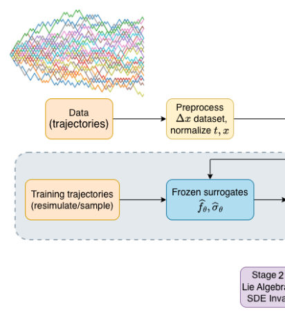
<figcaption class="paper-figure-caption"><b>Fig 1.</b> Figure 1. Pipeline for LieStoNet</figcaption>
</figure>
<figure class="paper-figure-card">
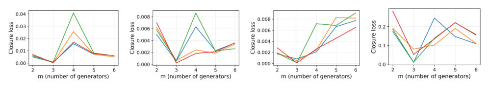
<figcaption class="paper-figure-caption"><b>Fig 2.</b> Figure 2. Post-training Lie bracket closure loss L1 vs. number of generators m across four experiments. Colors denote independent runs with identical settings (different random seeds), showing the minimum is consistently attained at the ground-truth m rather than a one-off.</figcaption>
</figure>
<figure class="paper-figure-card">
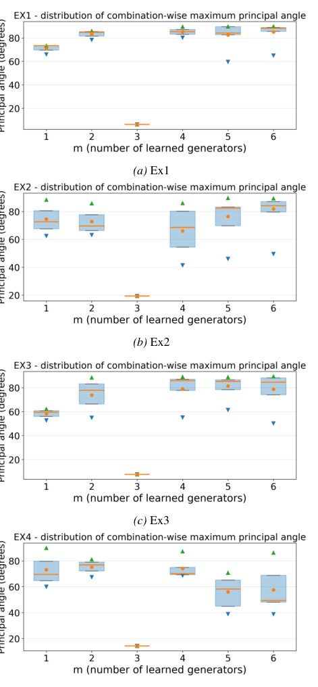
<figcaption class="paper-figure-caption"><b>Fig 3.</b> Figure 3. Distribution of combination-wise maximum principal angles. Number of learned generators (m) vs. principal angles. The blue boxes denote the interquartile range; the orange horizontal lines inside the box denote the median; the green up triangles and the blue down triangles denote the maximum and minimum of maximum principal angles, respectively; the orange dots denote the mean.</figcaption>
</figure>
<figure class="paper-figure-card">
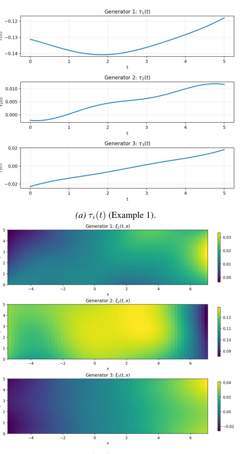
<figcaption class="paper-figure-caption"><b>Fig 4.</b> Figure 4. Learned generator components for Example 1. Part (a): temporal component τi(t). Part (b): spatial component ξi(t, x) visualized as heat maps.</figcaption>
</figure>
<figure class="paper-figure-card">
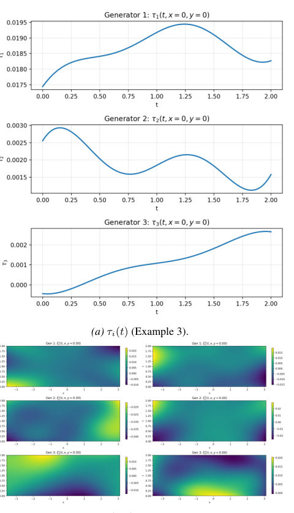
<figcaption class="paper-figure-caption"><b>Fig 5.</b> Figure 6. Learned generator components for Example 3. Part (a): τi(t). Part (b): ξi(t, x) heat maps.</figcaption>
</figure>
</div>

<p><strong>Summary.</strong> This paper introduces LieStoNet, a novel machine learning framework designed to discover continuous symmetry generators for Stochastic Differential Equations directly from raw data. By enforcing both the SDE's determining equations and the algebraic properties of Lie brackets within its loss function, it provides an interpretable method for analyzing symmetries in noisy stochastic systems.</p>
<p><strong>Why it may be interesting.</strong> While focused on general stochastic systems, the methodology of using deep learning to enforce complex underlying mathematical structures (like Lie brackets) is highly relevant for modeling quantum dynamics where symmetries are crucial for simplification.</p>
<details>
<summary>Detailed structure</summary>
<p><strong>Main problem.</strong> The core problem is discovering continuous Lie-point symmetries for Stochastic Differential Equations (SDEs) directly from noisy, spatiotemporal data trajectories.</p>
<p><strong>Main result.</strong> LieStoNet successfully recovers symmetry generators consistent with known analytic algebras across various canonical SDEs, providing an interpretable tool for analyzing stochastic dynamics.</p>
<p><strong>Method.</strong> It employs an end-to-end framework that first trains a neural surrogate for the SDE coefficients and then learns the symmetry generators by minimizing losses enforcing both the SDE determining equations and the Lie algebra axioms (closure and Jacobi identity).</p>
<p><strong>Model / system.</strong> The system modeled is governed by an Itô SDE: d x_t = f(t, x_t) dt + sigma(t, x_t) dW_t. The analysis connects this stochastic view to the associated deterministic Fokker-Planck equation.</p>
<p><strong>Key observables.</strong> Discovered Lie-point symmetry generators and the maximum principal angle between learned and analytic symmetry-algebra spans.</p>
<p><strong>Important parameters / regimes.</strong> The relative weights assigned to different loss terms (e.g., $w_6$ for SDE constraints, $w_7$ for finite-step losses) are critical operational parameters.</p>
<p><strong>Assumptions / limitations.</strong> The method is limited to discovering projectable Lie-point symmetries and relies on the assumption that a differentiable neural surrogate can accurately capture the underlying dynamics from discrete samples.</p>
<p><strong>Figures summary.</strong> Tables detail performance metrics, ablation studies showing loss term importance, and quantitative analysis of how the maximum principal angle varies non-monotonically with optimization weights $w_6$ and $w_7$.</p>
<p><strong>Paper structure.</strong> The paper introduces LieStoNet in two stages: first, training a neural surrogate for the SDE coefficients from data; second, optimizing the symmetry generators by minimizing a composite loss function that enforces both physical constraints (SDE determining equations) and mathematical structure (Lie algebra axioms).</p>
</details>
<details>
<summary>Abstract</summary>
<p>Symmetry is central to modern machine learning and physics: invariances and equivariances improve sample efficiency, robustness, and out-of-distribution generalization, while symmetry principles guide scientific modeling. Yet for stochastic dynamical systems the relevant continuous symmetries are rarely known, and symmetry discovery for SDEs has remained essentially unexplored. We introduce \textit{LieStoNet}, an end-to-end, \emph{template-free} framework for discovering Lie-point symmetries of SDEs directly from spatiotemporal trajectories, without prespecifying symmetry groups, templates, or canonical coordinates. Building on the seminal SDE Lie-symmetry theory of Gaeta and Quintero (1999), which formalizes Lie-point SDE symmetries and their relation to Fokker-Planck symmetries, LieStoNet learns neural surrogates for drift and diffusion from increments, then learns projectable generators by enforcing the SDE determining equations, separately regularizing for closure under Lie brackets, adherence to the Lie algebra axioms (bilinearity, antisymmetry, Jacobi), and a non-redundant independent basis. The surrogate also defines an associated Fokker-Planck equation, enabling optional discovery of its Lie-point symmetries in parallel. Across multiple canonical SDEs with known analytic symmetries, LieStoNet recovers generators consistent with the ground-truth symmetry algebra, providing interpretable symmetry discovery for noisy dynamics. Code is available at \href{https://github.com/sumit-sinha-seas/LieStoNet_Final.git}{this link}.</p>
</details>
<p><sub><a href="#top">↑ back to top</a></sub></p>

<p><a id="paper-2608.01280"></a></p>
<h3 id="algorithmic-overlaps-in-the-baxter-wu-model-cluster-dynamics-under-novotny-evertz-updates"><a href="http://arxiv.org/abs/2608.01280v1">Algorithmic overlaps in the Baxter-Wu model: cluster dynamics under Novotny-Evertz updates</a></h3>
<p><strong>Authors:</strong> Ian Pilé, Lev Shchur<br>
<strong>Type:</strong> theory · <strong>Category:</strong> statistical mechanics · <strong>PDF:</strong> <a href="https://arxiv.org/pdf/2608.01280v1">https://arxiv.org/pdf/2608.01280v1</a><br>
<strong>Analysis basis:</strong> full PDF text, analyzed in chunks
<strong>Topic relevance:</strong> <code>non-equilibrium universality</code> <strong>3/5</strong> · <code>non-equilibrium dynamics</code> <strong>2/5</strong> · <code>driven-dissipative phase transition</code> <strong>1/5</strong> · <code>methods for driven-dissipative</code> <strong>1/5</strong></p>
<div class="figure-strip-hint">↔ Scroll figures horizontally</div>
<div class="paper-figures-scroll">
<figure class="paper-figure-card">
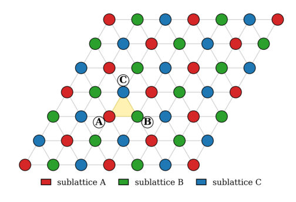
<figcaption class="paper-figure-caption"><b>Fig 1.</b> FIG. 1: Three-sublattice coloring of the triangular lattice (A red, B green, C blue); every elementary triangle (gold) has one site of each. The unique three-coloring closes on the torus only when L mod 3=0. This structure underlies both the four-fold degeneracy and the Novotny–Evertz cluster update.</figcaption>
</figure>
<figure class="paper-figure-card">
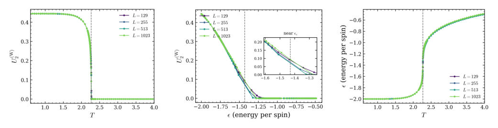
<figcaption class="paper-figure-caption"><b>Fig 2.</b> FIG. 2: Baxter–Wu, single-cluster updates. (a) Mean overlap U (W) 2 versus T for L=129–1023. The ordered-phase plateau at ≈0.44 reflects the 2N/3 active spins [Eq. (7)]. (b) Mean overlap versus energy per spin. Inset zooms on the critical region. (c) Energy per spin versus T. The monotonic relation justifies the energy axis in panel (b).</figcaption>
</figure>
<figure class="paper-figure-card">
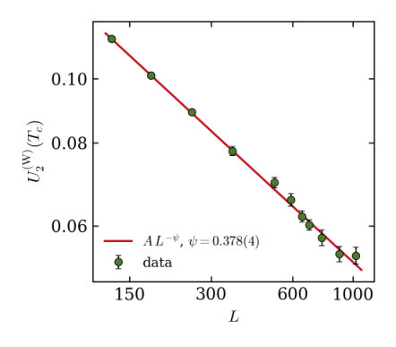
<figcaption class="paper-figure-caption"><b>Fig 3.</b> FIG. 3: Finite-size scaling of U (W) 2 (Tc) versus L (log–log) for eleven sizes L=129–1023, with jackknife errors from ∼400 independent replicas; the line is a pure power law A L−ψ with ψ(W) BW =0.378(4) (reduced χ2 ≈0.6), more moderate than the Ising/Potts value.</figcaption>
</figure>
<figure class="paper-figure-card">
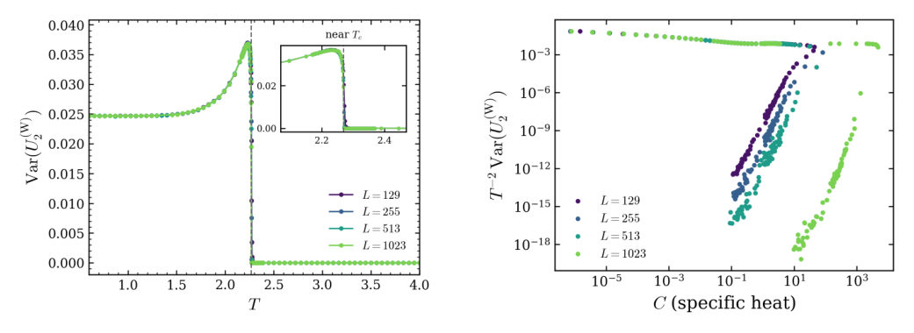
<figcaption class="paper-figure-caption"><b>Fig 4.</b> FIG. 4: (a) Variance Var(U (W) 2 ) versus T; inset on the critical peak. The peak sharpens with L; the low-T plateau is 2/81. (b) Rescaled variance T −2Var(U (W) 2 ) versus C (log–log). Upper branch T &lt; Tc, lower branch T &gt; Tc; they meet at the specific-heat peak.</figcaption>
</figure>
<figure class="paper-figure-card">
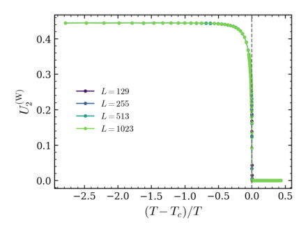
<figcaption class="paper-figure-caption"><b>Fig 5.</b> FIG. 5: U (W) 2 versus (T −Tc)/T; the overlap behaves like an order parameter, dropping from a finite plateau to zero without diverging.</figcaption>
</figure>
</div>

<p><strong>Summary.</strong> The paper analyzes the Baxter-Wu model using Markov Chain Monte Carlo simulations to study an 'algorithmic overlap' observable. By comparing its critical behavior to established models, the authors demonstrate that this overlap exponent is determined by the specific Novotny-Evertz cluster update rule rather than the model's static universality class. This highlights the diagnostic power of tracking dynamic process metrics in phase transitions.</p>
<p><strong>Why it may be interesting.</strong> This work provides a rigorous example of how non-equilibrium or algorithmic observables can serve as powerful diagnostics in statistical mechanics, potentially revealing details about the dynamics inaccessible through standard equilibrium critical exponents.</p>
<details>
<summary>Detailed structure</summary>
<p><strong>Main problem.</strong> The study investigates whether an 'algorithmic observable' derived from Markov Chain Monte Carlo (MCMC) simulations can characterize the thermodynamics of a phase transition in a multi-spin interaction model.</p>
<p><strong>Main result.</strong> The algorithmic overlap mean behaves like an order parameter, dropping to zero at $T_c$, but its finite-size decay exponent ($\psi = 0.378(4)$) is smaller than that found for standard cluster dynamics (Ising/Potts), indicating it reflects the specific update rule.</p>
<p><strong>Method.</strong> The authors simulate the Baxter-Wu model using a specialized Novotny-Evertz sublattice-freezing single-cluster update and measure the spatial overlap between successive spin configurations.</p>
<p><strong>Model / system.</strong> The system is the 2D Baxter–Wu model on the triangular lattice with three-spin interactions ($\mathcal{H}_{	ext{BW}}$). The dynamics are governed by the Novotny–Evertz sublattice-freezing single-cluster update, which differs fundamentally from standard Fortuin–Kasteleyn cluster rules.</p>
<p><strong>Key observables.</strong> Algorithmic overlap ($U^{(W)}_n$), its mean $\langle U^{(W)}_n 
angle$, and its finite-size scaling exponent ($\psi(W)$).</p>
<p><strong>Important parameters / regimes.</strong> Critical temperature ($T_c$); system size $L$; the measured exponent $\psi = 0.378(4)$.</p>
<p><strong>Assumptions / limitations.</strong> The overlap is treated as an algorithmic observable, and its behavior is assumed to be dictated by the specific cluster update rule (NE) rather than static equilibrium properties.</p>
<p><strong>Figures summary.</strong> Not specified in detail, but comparisons are made between $\psi(W)$ for Baxter-Wu (NE dynamics) versus Ising/Potts models (FK dynamics).</p>
<p><strong>Paper structure.</strong> The paper introduces the model and the algorithmic observable. It then details the simulation methodology using NE updates. The core of the work presents the measurement of the overlap's behavior across $T_c$ and compares the resulting critical exponent $\psi(W)$ to known results, concluding that the update rule dictates this exponent.</p>
</details>
<details>
<summary>Abstract</summary>
<p>We study the spatial overlap of successive spin configurations generated by Markov chain Monte Carlo simulations of the Baxter-Wu model. Using the Novotny-Evertz sublattice-freezing single-cluster update, we track the mean and variance of the algorithmic overlap across the critical region. We show that, even in this three-spin model, the overlap acts as an algorithmic observable that follows the thermodynamics of the transition: the single-cluster overlap mean behaves like an order parameter, dropping from a finite ordered-phase plateau toward zero across $T_c$. The overlap does not diverge at criticality, instead it remains finite and its finite-size value decays as a clean power law, $U_2(T_c)\sim L^{-ψ}$, over eleven sizes with an exponent $ψ{=}0.378(4)$ smaller than the value $\approx0.42$ found for the Ising and Potts models under standard Fortuin-Kasteleyn cluster dynamics, indicating that it reflects the Novotny-Evertz sublattice-freezing dynamics rather than any static property of the model.</p>
</details>
<p><sub><a href="#top">↑ back to top</a></sub></p>

<p><a id="paper-2608.02403"></a></p>
<h3 id="entanglement-generation-beyond-quantum-theory-from-product-states-to-popescu-rohrlich-boxes"><a href="http://arxiv.org/abs/2608.02403v1">Entanglement Generation Beyond Quantum Theory: From Product States to Popescu-Rohrlich Boxes</a></h3>
<p><strong>Authors:</strong> Shun Umekawa, Akihiro Hokkyo, Hayato Arai, Kazuaki Takasan<br>
<strong>Type:</strong> theory · <strong>Category:</strong> quantum information and computing · <strong>PDF:</strong> <a href="https://arxiv.org/pdf/2608.02403v1">https://arxiv.org/pdf/2608.02403v1</a><br>
<strong>Analysis basis:</strong> full PDF text, analyzed in chunks
<strong>Topic relevance:</strong> <code>entanglement &amp; information structure</code> <strong>3/5</strong> · <code>Keldysh / 2PI / non-Gaussian methods</code> <strong>1/5</strong> · <code>correlated / nonlocal dissipation</code> <strong>1/5</strong> · <code>driven-dissipative phase transition</code> <strong>1/5</strong> · <code>methods for driven-dissipative</code> <strong>1/5</strong></p>
<div class="figure-strip-hint">↔ Scroll figures horizontally</div>
<div class="paper-figures-scroll">
<figure class="paper-figure-card">

<figcaption class="paper-figure-caption"><b>Fig 1.</b> FIG. 1. Entanglement generation in terms of two hallmark properties of unitary dynamics: reversibility and pure-state preservation. (a) In quantum theory, unitary dynamics can reversibly transform product pure states into entangled pure states. (b) Although the simplest boxworld, which corre- sponds to the setting for the CHSH inequality, admits no re- versible entangling transformation, relaxing reversibility while retaining pure-state preservation allows product pure states to be transformed into entangled PR boxes.</figcaption>
</figure>
</div>

<p><strong>Summary.</strong> The paper explores entanglement generation beyond standard quantum theory by analyzing transformations in generalized probabilistic models. It proves that while reversible dynamics cannot generate supraquantum correlations (like PR boxes), relaxing the requirement of reversibility to only require pure-state preservation enables such generation. This provides a rigorous mathematical framework distinguishing between these two dynamical constraints.</p>
<p><strong>Why it may be interesting.</strong> This work directly challenges fundamental assumptions about dynamics in quantum information theory, providing a concrete mechanism for generating correlations stronger than quantum mechanics allows without violating basic physical principles like pure-state mapping.</p>
<details>
<summary>Detailed structure</summary>
<p><strong>Main problem.</strong> The paper investigates whether entanglement generation beyond quantum theory is possible using pure-state-preserving (PSP) transformations in a generalized probabilistic framework called 'boxworld.' It specifically tests if such dynamics can generate Popescu-Rohrlich (PR) box correlations from uncorrelated product states.</p>
<p><strong>Main result.</strong> Relaxing the assumption of reversibility while maintaining PSP allows for entanglement generation, demonstrated by constructing an explicit transformation that maps product states to PR boxes. This establishes a physical distinction between reversibility and pure-state preservation beyond quantum theory.</p>
<p><strong>Method.</strong> The authors use mathematical analysis on the state space $  ext{PNS}$ (defined by no-signaling constraints) to classify all PSP transformations ($\phi$). They employ techniques involving affine maps, postselection protocols, and structural theorems derived from analyzing how observables transform under $\phi$.</p>
<p><strong>Model / system.</strong> The model is based on generalized probabilistic theories ('boxworld') describing correlations, specifically using the CHSH inequality setting. The system analyzes transformations acting on the state space of correlations ($ ext{PNS}$), distinguishing between quantum states and supraquantum PR boxes.</p>
<p><strong>Key observables.</strong> CHSH Value ($S_{a,b}(p)$), correlation vectors $C_{\vec{W}}$, and the classification of maps (entangling, disentangling, entanglement-preserving).</p>
<p><strong>Important parameters / regimes.</strong> The distinction between reversible dynamics and PSP dynamics; the structure of pure states ($   ext{VLR}$) versus PR boxes ($ ext{VPR}$).</p>
<p><strong>Assumptions / limitations.</strong> The analysis focuses on the 'simplest bipartite boxworld' corresponding to the CHSH inequality setting, and later parts assume specific structural properties for the map $\phi$ (e.g., PSP property).</p>
<p><strong>Figures summary.</strong> Figure 1 illustrates that relaxing reversibility while keeping PSP enables PR box generation, contrasting it with the no-entangling result found under full quantum reversibility.</p>
<p><strong>Paper structure.</strong> The paper first establishes the 'no-go' theorem for reversible dynamics. It then introduces and constructs a specific non-trivial PSP transformation ($\phi$) that generates PR boxes. Subsequent sections provide rigorous mathematical proofs, exhaustively classifying all such maps based on structural constraints derived from analyzing observables in both the Heisenberg picture and by imposing separability preservation.</p>
</details>
<details>
<summary>Abstract</summary>
<p>Entanglement generation is a fundamental dynamical capability in quantum information science and underpins many quantum advantages. While quantum theory enables it through unitary dynamics, boxworld, a generalized probabilistic theory admitting Popescu--Rohrlich boxes with supraquantum correlations, has no reversible transformation capable of generating entanglement. We show that this no-go picture changes fundamentally once reversibility is relaxed to pure-state preservation. We construct a pure-state-preserving transformation that maps every uncorrelated pure state to a Popescu--Rohrlich box and completely classify all pure-state-preserving entangling transformations in the simplest bipartite boxworld. Our results provide the first explicit mechanism for generating beyond-quantum entanglement without introducing mixing and demonstrate a physical distinction between reversibility and pure-state preservation that is obscured by the structure of quantum theory.</p>
</details>
<p><sub><a href="#top">↑ back to top</a></sub></p>

<p><a id="paper-2608.00468"></a></p>
<h3 id="what-is-electric-charge-charge-as-a-local-observable-in-relativistic-quantum-field-theory"><a href="http://arxiv.org/abs/2608.00468v1">What is electric charge?: Charge as a local observable in relativistic quantum field theory</a></h3>
<p><strong>Authors:</strong> Hideyasu Yamashita<br>
<strong>Type:</strong> theory · <strong>Category:</strong> other · <strong>PDF:</strong> <a href="https://arxiv.org/pdf/2608.00468v1">https://arxiv.org/pdf/2608.00468v1</a><br>
<strong>Analysis basis:</strong> full PDF text, analyzed in chunks
<strong>Topic relevance:</strong> <code>quantum measurements</code> <strong>3/5</strong> · <code>Keldysh / 2PI / non-Gaussian methods</code> <strong>2/5</strong> · <code>entanglement &amp; information structure</code> <strong>1/5</strong> · <code>measurement-induced transitions</code> <strong>1/5</strong></p>
<div class="figure-strip-hint">↔ Scroll figures horizontally</div>
<div class="paper-figures-scroll">
<figure class="paper-figure-card">

<figcaption class="paper-figure-caption"><b>Fig 1.</b> Low-resolution page preview, page 2</figcaption>
</figure>
<figure class="paper-figure-card">

<figcaption class="paper-figure-caption"><b>Fig 2.</b> Low-resolution page preview, page 3</figcaption>
</figure>
<figure class="paper-figure-card">

<figcaption class="paper-figure-caption"><b>Fig 3.</b> Low-resolution page preview, page 4</figcaption>
</figure>
<figure class="paper-figure-card">

<figcaption class="paper-figure-caption"><b>Fig 4.</b> Low-resolution page preview, page 5</figcaption>
</figure>
<figure class="paper-figure-card">

<figcaption class="paper-figure-caption"><b>Fig 5.</b> Low-resolution page preview, page 6</figcaption>
</figure>
</div>

<p><strong>Summary.</strong> This paper addresses the deep theoretical problem of defining electric charge as a truly local observable in relativistic QFT. It moves beyond standard current definitions by introducing 'scope-local charge' within an abstract C*-algebraic framework. The work provides mathematical tools to calculate conditional probabilities for these charges, offering a rigorous, albeit highly abstract, path toward reconciling quantum theory with empirical conservation laws.</p>
<p><strong>Why it may be interesting.</strong> While highly abstract, the rigorous algebraic approach to defining conserved quantities like charge is foundational to understanding local measurements in QFT, which underpins many modern quantum information theories.</p>
<details>
<summary>Detailed structure</summary>
<p><strong>Main problem.</strong> The paper tackles the fundamental theoretical question of defining 'electric charge' as a local, measurable observable within relativistic Quantum Field Theory (QFT). It questions whether standard concepts like the 4-current operator can provide an experimentally interpretable definition.</p>
<p><strong>Main result.</strong> The author proposes and develops the concept of 'scope-local charge,' $Q_\zeta(P)$, defined in an abstract C*-algebraic setting using Araki–Wyss maps. This framework allows for mathematically consistent, quantifiable predictions regarding conditional probabilities of charge measurements.</p>
<p><strong>Method.</strong> The methodology is highly abstract, employing algebraic quantum field theory (AQFT) techniques within the CAR algebra. It utilizes functional analysis, projection operators ($P$), and spectral decomposition to define observables locally.</p>
<p><strong>Model / system.</strong> The theoretical framework models charged fermion fields (like the Dirac field) in Minkowski spacetime. The focus is not on a specific physical Hamiltonian but on the algebraic structure of local observables generated by these fields.</p>
<p><strong>Key observables.</strong> Total charge operator ($Q$), 4-current operator ($\mathbf{j}$), and the proposed 'scope-local charge' $Q_\zeta(P)$.</p>
<p><strong>Important parameters / regimes.</strong> The dimension of spacetime (specifically $(3+1)$ vs. $(1+1)$), and spectral properties related to integer quantization.</p>
<p><strong>Assumptions / limitations.</strong> Key assumptions include defining observables via finite-rank projections ('scopes') and imposing structural constraints like C-invariance or specific relationships between projection operators ($P_1 P_2$).</p>
<p><strong>Paper structure.</strong> The paper progresses from identifying the failure of standard local current definitions in (3+1)D to proposing the abstract 'scope' concept. It then develops mathematical machinery using C*-algebras, addressing symmetries (Charge Conjugation), and finally calculating conditional probabilities for these scope-local charges.</p>
</details>
<details>
<summary>Abstract</summary>
<p>It is rather surprising that modern quantum physics does not appear to have provided any clear answer to the simple question <code>what is electric charge?''. Even when the total charge operator $Q$ is well-defined, the non-locality of $Q$ implies that it is not an observable in the usual sense, which can be measured by a (local) experimental apparatus. A candidate for the</code>local version'' of charge operator is the 4-current operator $j=(j^μ)_{μ=0,1,2,3}$. However, it is known that the rigorous definition of $j$ is difficult in $(3+1)$-dimensional Minkowski space. Although it was found that the current can be defined in $(1+1)$-dimensions (Carey et al.), I argue that even when $j$ can be suitably defined, the interpretability of $j$ as the <code>local charge operator'' is dubious. Instead I return to Araki and Wyss (1964), and propose the concept of</code>scope-local charge'' $Q_ζ(P)$ for a ``scope'' $P$, expressed by a finite-dimensional projection. I work in an abstract $C^{*}$-algebraic setting.</p>
</details>
<p><sub><a href="#top">↑ back to top</a></sub></p>

<p><a id="paper-2608.00560"></a></p>
<h3 id="adaptive-operator-generated-subspaces-for-effective-many-body-hamiltonians"><a href="http://arxiv.org/abs/2608.00560v1">Adaptive operator-generated subspaces for effective many-body Hamiltonians</a></h3>
<p><strong>Authors:</strong> Ginanjar Utama, Hermawan Kresno Dipojono<br>
<strong>Type:</strong> theory · <strong>Category:</strong> strongly correlated electrons · <strong>PDF:</strong> <a href="https://arxiv.org/pdf/2608.00560v1">https://arxiv.org/pdf/2608.00560v1</a><br>
<strong>Analysis basis:</strong> full PDF text, analyzed in chunks
<strong>Topic relevance:</strong> <code>analog quantum simulation</code> <strong>3/5</strong> · <code>correlated cavity matter</code> <strong>1/5</strong> · <code>entanglement &amp; information structure</code> <strong>1/5</strong> · <code>non-equilibrium dynamics</code> <strong>1/5</strong></p>
<div class="figure-strip-hint">↔ Scroll figures horizontally</div>
<div class="paper-figures-scroll">
<figure class="paper-figure-card">

<figcaption class="paper-figure-caption"><b>Fig 1.</b> FIG. 1. Computational contract. The exact route builds one global matrix-element bank and solves an adaptively grown generalized eigenproblem. The finite-shot route measures the union word set in QWC groups and resamples each group’s joint histogram through every nonlinear downstream operation. Upstream electronic-structure and embedding stages are outside the claimed scope.</figcaption>
</figure>
<figure class="paper-figure-card">

<figcaption class="paper-figure-caption"><b>Fig 2.</b> FIG. 2. Absolute relative energy error for the default matched-budget ladder. “n/t” means that the arm was not run. The heat map compares energy only; Table VI supplies the conditioning and measurement-width trade. The default A-CASE column uses M = 9, not the larger level-4 Hubbard run.</figcaption>
</figure>
<figure class="paper-figure-card">

<figcaption class="paper-figure-caption"><b>Fig 3.</b> FIG. 3. Lorentzian-broadened staggered-spin line with η = 0.1 eV. The band is pointwise across frequency, heuristic, and conditional on replicas that reproduce the pipeline’s rank and root identity.</figcaption>
</figure>
<figure class="paper-figure-card">

<figcaption class="paper-figure-caption"><b>Fig 4.</b> FIG. 4. Pointwise width of the 95% band across frequency for the two rows of Table VIII. The absolute spectra are visually indistinguishable, so the width is plotted directly. The cusp sits at the line center, where an uncertain gap moves the Lorentzian along the axis without changing its height.</figcaption>
</figure>
</div>

<p><strong>Summary.</strong> This paper introduces A-CASE, an advanced eigensolver that generates active subspaces by adaptively building matrix elements from a single shared bank of Pauli expectation values. It successfully bridges the gap between traditional electronic structure methods and modern quantum simulation techniques using small molecular benchmarks. The work establishes a systematic workflow for calculating energies and response functions without making overreaching claims about material accuracy or computational advantage.</p>
<p><strong>Why it may be interesting.</strong> It provides a highly structured, computationally rigorous pathway to derive effective Hamiltonians for quantum simulation directly from electronic structure theory, which is crucial for applying quantum algorithms to chemistry and condensed matter physics.</p>
<details>
<summary>Detailed structure</summary>
<p><strong>Main problem.</strong> The primary challenge is bridging the gap between electronic structure calculations that yield effective many-body Hamiltonians and quantum eigensolver studies that often start with pre-defined qubit models.</p>
<p><strong>Main result.</strong> The proposed A-CASE method achieves high accuracy (e.g., $0.342 	ext{ mHa}$ error) for small systems by adaptively constructing the necessary subspace using a single, shared Pauli-expectation bank.</p>
<p><strong>Method.</strong> It introduces the Adaptive Clifford-Algebra Subspace Eigensolver (A-CASE), an operator-generated Rayleigh--Ritz method that reconstructs matrix elements from one global expectation value bank and uses adaptive growth scoring to select basis operators.</p>
<p><strong>Model / system.</strong> The work is tested on small molecular systems, specifically linear H4 in STO-3G with a CAS(4e, 4o) active space, allowing comparison against established methods like FCI.</p>
<p><strong>Key observables.</strong> Energy eigenvalues, correlation energies, and response functions (susceptibility $\chi(\omega)$).</p>
<p><strong>Important parameters / regimes.</strong> Subspace size (e.g., nine-vector budget), error tolerance ($    ext{mHa}$ level), and the number of Pauli words used in the bank.</p>
<p><strong>Assumptions / limitations.</strong> The method does not claim materials accuracy, favorable scaling, or a quantum advantage; finite-shot response bands are explicitly noted as heuristic and conditional, not rigorous confidence certificates.</p>
<p><strong>Figures summary.</strong> Figure 1 illustrates the computational contract comparing A-CASE's global matrix-element bank approach to the finite-shot route using QWC groups. Table I compares A-CASE against other subspace methods based on their selection rules.</p>
<p><strong>Paper structure.</strong> The paper introduces A-CASE as a unified framework, details its adaptive growth mechanism and matrix reconstruction from a shared Pauli bank, presents quantitative benchmarks against established methods (ADAPT-GCIM, FCI), discusses the calculation of response functions, and concludes by outlining limitations regarding material accuracy claims.</p>
</details>
<details>
<summary>Abstract</summary>
<p>Electronic-structure and embedding workflows terminate in effective many-body Hamiltonians, whereas quantum eigensolver studies often start from hand-built qubit models. We present the Adaptive Clifford-Algebra Subspace Eigensolver (A-CASE), a single-reference, operator-generated Rayleigh--Ritz method. Overlap, Hamiltonian, observable, and response matrices are reconstructed from one shared Pauli-expectation bank, while adaptive growth scores overlap-aware local pencils and rejects symmetry leakage or near-linear dependence. A strict FCIDUMP adapter supplies the active-space boundary. For linear H$_4$ in STO-3G with CAS(4e,4o), the mapped sector agrees with independent determinant FCI to $3.1\times10^{-15}$ Ha. At a nine-vector budget A-CASE has a $3.019$ mHa error; replacing the determinant reference by a two-operator ADAPT-VQE state reduces it to $0.342$ mHa, without implying a matched total-cost advantage. Under a matched contract, the fixed-reference route uses one state preparation versus ADAPT-VQE's ninety but measures roughly an order of magnitude more Pauli words. Exact fixed-angle ADAPT-GCIM gives $13.364$ mHa at the nearest size match and $10.674$ mHa at the iteration match, with its transition-pair burden reported separately. Across a broader benchmark ladder, fixed Krylov bases are generally more accurate and often narrower but substantially less well conditioned. A grouped bootstrap propagates finite-shot variability through thresholding, diagonalization, root matching, spectral weights, susceptibility, and broadening; its bands are explicitly heuristic and conditional, not finite-sample confidence certificates. The work establishes an executable path from an interchange Hamiltonian to energies, correlations, and response, without claiming materials accuracy, favorable scaling, or quantum advantage.</p>
</details>
<p><sub><a href="#top">↑ back to top</a></sub></p>

<p><a id="paper-2608.00210"></a></p>
<h3 id="chiral-magnon-mixing-by-symmetry-breaking-in-collinear-ferrimagnets"><a href="http://arxiv.org/abs/2608.00210v1">Chiral Magnon Mixing by Symmetry-Breaking in Collinear Ferrimagnets</a></h3>
<p><strong>Authors:</strong> Dhurba R. Jaishi, Tyler J. Slade, S. X. M. Riberolles, Bing Li, Tianxiong Han, D. M. Pajerowski, D. L. Abernathy, Barry Winn, Melissa Graves-Brook, B. G. Ueland, R. J. McQueeney<br>
<strong>Type:</strong> both · <strong>Category:</strong> strongly correlated electrons · <strong>PDF:</strong> <a href="https://arxiv.org/pdf/2608.00210v1">https://arxiv.org/pdf/2608.00210v1</a><br>
<strong>Analysis basis:</strong> full PDF text, analyzed in chunks
<strong>Topic relevance:</strong> <code>spintronics-quantum-optics interface</code> <strong>3/5</strong> · <code>analog quantum simulation</code> <strong>1/5</strong> · <code>driven-dissipative phase transition</code> <strong>1/5</strong> · <code>exotic spin models in light-matter</code> <strong>1/5</strong></p>
<div class="figure-strip-hint">↔ Scroll figures horizontally</div>
<div class="paper-figures-scroll">
<figure class="paper-figure-card">

<figcaption class="paper-figure-caption"><b>Fig 1.</b> FIG. 1. Chiral magnons in Tb166 and Er166. (a) Uniaxial ferrimagnetic structure of Tb166. (b) Planar ferrimagnetic structure of Er166. (c), (d) Unpolarized INS measurement of the magnon dispersions of Tb166 and Er166, respectively. For Tb166, measurements were performed with Ei = 75 meV at 6 K along the reciprocal-lattice direction (H, 0, 2). Data have been integrated in the transverse directions with K = [-0.05, 0.05] and L = [1.90, 2.10] in reciprocal lattice units (r. l. u.). For Er166, measurements were performed with Ei = 12 meV at 1.8 K along the reciprocal-lattice direction (H, 0, 2). Data have been integrated in the transverse directions with K = [-0.03, 0.03] and L = [1.80, 2.20]...</figcaption>
</figure>
<figure class="paper-figure-card">

<figcaption class="paper-figure-caption"><b>Fig 2.</b> FIG. 2. Magnon chirality mixing in Er166. Half-polarized INS data for Er166 showing the magnetic contribution (σM) (a)–(b) and the chiral contribution (c)–(d) to spin excitations along the reciprocal-lattice direction (H, 0, 0) and (1, 0, L), respectively. The scattering events were collected with Ei = 15 meV at 6 K. The gray solid lines in (a) correspond to the model dispersion. (e), (f) Model calculations of the chiral scattering along the two directions convoluted with a Gaussian energy full-width-at-half-maximum of 0.4 meV. The gray shaded regions in (a-d) are obscured by the kinematic limit.</figcaption>
</figure>
<figure class="paper-figure-card">

<figcaption class="paper-figure-caption"><b>Fig 3.</b> FIG. 3. Magnon spin angular momentum. Sublattice SAM and total SAM (in units of ℏ) for acoustic and optic modes in (a), (b) Tb166 and (c), (d) Er166. In each panel, the lower plot shows the sublattice weight for each eigenvector. Thin vertical lines indicate the wavevector where the modes cross.</figcaption>
</figure>
<figure class="paper-figure-card">

<figcaption class="paper-figure-caption"><b>Fig 4.</b> FIG. 4. Magnon mode eigenvectors. Precession of rare- earth moments (orange arrow) and Mn moments (green ar- row) in a right-handed (red cone) or left-handed fashion (blue cone) relative to the net magnetization (M). Eigenvectors are shown near the mode-crossing wavevector for (a) Tb166 and (b) Er166. For Er166, the Er and Mn moments precess with opposite handedness, allowing the cancellation of the net SAM and chirality.</figcaption>
</figure>
</div>

<p><strong>Summary.</strong> This work explores how broken symmetries in ferrimagnets, specifically $   ext{RMn}_6  ext{Sn}_6$, induce mixing between right- and left-handed magnons. By combining theoretical modeling with polarized neutron scattering experiments, the authors demonstrate that anisotropy can cause a measurable reversal of magnon chirality within a single energy band. This highlights magnetic symmetry as a key control knob for manipulating quantum spin excitations.</p>
<p><strong>Why it may be interesting.</strong> The mechanism linking crystal symmetry breaking (anisotropy) to the hybridization and reversal of magnon chirality is a rich topic relevant to topological spin textures and emergent quantum phenomena in magnetic materials.</p>
<details>
<summary>Detailed structure</summary>
<p><strong>Main problem.</strong> The study investigates chiral magnon mixing induced by symmetry-breaking mechanisms within collinear ferrimagnetic materials.</p>
<p><strong>Main result.</strong> The research demonstrates that in $    ext{ErMn}_6 ext{Sn}_6$, magnetic anisotropy breaks the $U(1)$ symmetry, causing right- and left-handed magnons to hybridize, leading to a measurable reversal of chirality within a single magnon band as momentum changes.</p>
<p><strong>Method.</strong> The study combines theoretical calculations using linear spin-wave theory with experimental measurements from polarized inelastic neutron scattering (INS).</p>
<p><strong>Model / system.</strong> The system is the $ ext{RMn}_6  ext{Sn}_6$ kagome ferrimagnet. The physics is modeled via a Hamiltonian incorporating exchange interactions ($H_{	ext{ex}}$) and magnetic anisotropy ($H_{	ext{aniso}}$), which dictates the symmetry of the spin dynamics.</p>
<p><strong>Key observables.</strong> Chiral scattering cross-section ($\sigma_{	ext{ch}}$) measured via polarized INS, magnon energy/momentum dispersion, and the degree of hybridization gap opening.</p>
<p><strong>Important parameters / regimes.</strong> Rare-earth element (R = Tb, Er), applied magnetic field strength, and anisotropy parameters derived from CEF calculations ($B_m^l$).</p>
<p><strong>Assumptions / limitations.</strong> The analysis relies on linear spin-wave theory approximations. Some measurements involve integrating over transverse directions in the Brillouin zone.</p>
<p><strong>Figures summary.</strong> Figures illustrate crystal structures, unpolarized/chiral INS spectra for both $   ext{TbMn}_6 ext{Sn}_6$ and $    ext{ErMn}_6 ext{Sn}_6$, and theoretical calculations showing how chirality changes near mode crossings due to symmetry breaking.</p>
<p><strong>Paper structure.</strong> The paper establishes the background on magnon chirality in ferrimagnets, details the experimental setup using polarized INS, develops the spin-wave Hamiltonian incorporating anisotropy, presents results comparing $    ext{Tb}$ (uniaxial) and $   ext{Er}$ (planar) systems, and concludes by discussing the role of symmetry breaking in inducing chiral mixing.</p>
</details>
<details>
<summary>Abstract</summary>
<p>Magnons in ferromagnets possess spin angular momentum defined by right-handed precession of the moment around the magnetization direction. In antiferromagnets with no net magnetization, left-and right-handed magnons are degenerate in the absence of an applied field. Ferrimagnets possess uncompensated magnetic sublattices, which should natively possess right-and left-handed magnons where their energy is split by the internal molecular field. Here, we show that RMn6Sn6 (R = Tb, Er) ferrimagnets possess right and left-handed magnon bands that cross at finite momentum (k) within the basal plane, defining modes with opposite dynamical chirality. Depending on the symmetry of the ferrimagnetic order, which may be manipulated by varying the rare-earth magnetic anisotropy or with applied field, the band crossing may remain a nodal line or may be gapped. The gapped modes contain hybridized chiral excitations whose chirality becomes k-dependent.</p>
</details>
<p><sub><a href="#top">↑ back to top</a></sub></p>

<p><a id="paper-2608.00907"></a></p>
<h3 id="estimating-spacetime-fluctuation-strength-in-su11-and-su2-interferometers"><a href="http://arxiv.org/abs/2608.00907v1">Estimating spacetime fluctuation strength in SU(1,1) and SU(2) interferometers</a></h3>
<p><strong>Authors:</strong> B. Sharmila<br>
<strong>Type:</strong> theory · <strong>Category:</strong> other · <strong>PDF:</strong> <a href="https://arxiv.org/pdf/2608.00907v1">https://arxiv.org/pdf/2608.00907v1</a><br>
<strong>Analysis basis:</strong> full PDF text, analyzed in chunks
<strong>Topic relevance:</strong> <code>interference shaping light</code> <strong>3/5</strong> · <code>correlated / nonlocal dissipation</code> <strong>1/5</strong> · <code>entanglement &amp; information structure</code> <strong>1/5</strong> · <code>quantum measurements</code> <strong>1/5</strong></p>
<div class="figure-strip-hint">↔ Scroll figures horizontally</div>
<div class="paper-figures-scroll">
<figure class="paper-figure-card">

<figcaption class="paper-figure-caption"><b>Fig 1.</b> FIG. 1. A schematic diagram of an (a) SU(2) and (b) SU(1, 1) interferometer. (c) Modelling internal loss in an interferometer with a beam splitter of reflectance √η.</figcaption>
</figure>
<figure class="paper-figure-card">

<figcaption class="paper-figure-caption"><b>Fig 2.</b> FIG. 2. Scaled QFI Qs = Γ2QΓ (red), scaled CFI C(2) gs = Γ2C(g2) Γ (green), scaled CFI C(i) gs = Γ2C(gi) Γ (magenta) with i = 3 in (a) and i = 4 in (b), and scaled CFI C(n) ns = Γ2C(nn) Γ with C(1) ns (solid cyan), C(5) ns (dashed cyan) vs squeezing 10 log10  e2β</figcaption>
</figure>
<figure class="paper-figure-card">

<figcaption class="paper-figure-caption"><b>Fig 3.</b> FIG. 3. Scaled QFI Qc = ℓ2Qℓ(red), scaled CFI C(2) gc = ℓ2C(g2) ℓ (green), scaled CFI C(i) gc = ℓ2C(gi) ℓ (magenta) with i = 3 in (a) and i = 4 in (b), and scaled CFI C(n) nc = ℓ2C(nn) ℓ with C(1) nc (cyan) vs squeezing 10 log10  e2β in decibels for (a) SU(2) and (b) SU(1, 1) interferometers. The black horizontal lines are at 0.5 (dot-dashed) and (1 −η) eσ (dotted) with η = 5 × 10−6</figcaption>
</figure>
<figure class="paper-figure-card">

<figcaption class="paper-figure-caption"><b>Fig 4.</b> FIG. 4. Scaled QFI Qs = Γ2QΓ (red), scaled CFI C(2) gs = Γ2C(g2) Γ (green), and C(i) gs = Γ2C(gi) Γ (magenta) vs squeez- ing 10 log10  e2β in decibels, with solid curves for SU(2) and dashed curves for SU(1, 1) interferometers. Here i = 3 for SU(2) and i = 4 for SU(1, 1) interferometers. The black hor- izontal lines are at 0.5 (dot-dashed) and (1 −η) eσ (dotted) with η = 5 × 10−6.</figcaption>
</figure>
<figure class="paper-figure-card">

<figcaption class="paper-figure-caption"><b>Fig 5.</b> FIG. 5. Scaled QFI Qs = Γ2QΓ (red), scaled CFI C(2) gs = Γ2C(g2) Γ (green), scaled CFI C(3) gs = Γ2C(g3) Γ (magenta) and scaled CFI C(n) ns = Γ2C(nn) Γ with C(1) ns (solid cyan), C(5) ns (dashed cyan) vs squeezing 10 log10  e2β in decibels for an SU(2) interferometer. The black horizontal lines are at 0.5 (dot- dashed) and (1 −η) eσ (dotted) with η = 5 × 10−6.</figcaption>
</figure>
</div>

<p><strong>Summary.</strong> This paper theoretically compares two types of laser interferometers, SU(2) and SU(1,1), for detecting subtle signatures of random spacetime fluctuations. By calculating Fisher information metrics, the authors assess when the alternative SU(1,1) geometry provides a superior measurement sensitivity compared to the standard SU(2) setup. The findings suggest that while theoretically promising, realizing this advantage requires significant technological advancements beyond current experimental capabilities.</p>
<p><strong>Why it may be interesting.</strong> This work applies advanced quantum metrology techniques (QFI/CFI) to fundamental physics problems in general relativity, specifically testing the limits of spacetime measurement using quantum optics.</p>
<details>
<summary>Detailed structure</summary>
<p><strong>Main problem.</strong> The study aims to determine if using an SU(1,1) interferometer offers a measurable advantage over the conventional SU(2) interferometer for estimating spacetime fluctuation strength and correlation length.</p>
<p><strong>Main result.</strong> For current experimental parameters, the SU(1,1) setup shows no advantage; however, theoretical analysis suggests it could outperform SU(2) under future conditions involving significant technological improvements.</p>
<p><strong>Method.</strong> The authors compute both Quantum Fisher Information (QFI) and classical Fisher information (CFI) metrics for Gaussian input states in both interferometer types.</p>
<p><strong>Model / system.</strong> The physical system is a high-precision laser interferometer, modeled using SU(2) and SU(1,1) transformations. The analysis incorporates the effects of internal losses ($\eta$) on the quantum state evolution.</p>
<p><strong>Key observables.</strong> Quantum Fisher Information (QFI) and classical Fisher information metrics for estimating fluctuation strength ($\Gamma$) and correlation length ($\ell$).</p>
<p><strong>Important parameters / regimes.</strong> Spacetime fluctuation strength ($\Gamma$), correlation length ($\ell$), internal loss ($\eta$), squeezing parameter ($eta$), and input coherent state amplitude ($\alpha$).</p>
<p><strong>Assumptions / limitations.</strong> The analysis assumes the long wavelength limit, uses Gaussian states, and compares performance under both lossless and lossy conditions.</p>
<p><strong>Figures summary.</strong> Figures compare scaled QFI and CFIs for SU(2) vs. SU(1,1) across different squeezing regimes; Table I summarizes ratios of Fisher information metrics.</p>
<p><strong>Paper structure.</strong> The paper introduces the problem by comparing SU(2) and SU(1,1). It details the calculation of QFI and CFI using quadrature operators for Gaussian states. The core is a comparative analysis showing performance under current vs. future technological regimes to assess potential advantages.</p>
</details>
<details>
<summary>Abstract</summary>
<p>High-precision laser interferometers are commonly used to search for signatures of random spacetime fluctuations, in an attempt to understand the fundamental nature of gravity. Conventionally, $SU(2)$ interferometers have been used in such experimental investigations. Motivated by [K. Zheng \textit{et al.}, Photon. Res. \textbf{8}, 1653 (2020)], I assess if there is any advantage to be gained by using an $SU(1,1)$ interferometer instead of the $SU(2)$ interferometer. To this end, I compute the quantum Fisher information for estimating the strength and the correlation length of the spacetime fluctuations, and the corresponding classical Fisher information considering different experimentally relevant measurement schemes, in both types of interferometers. I compare the information metrics corresponding to different parameter regimes that are relevant to both current and possible future experimental setups. This helps me assess if and when the $SU(1,1)$ interferometer offers any advantage over the $SU(2)$ interferometer for estimating either the fluctuation strength or correlation length of the spacetime fluctuations.</p>
</details>
<p><sub><a href="#top">↑ back to top</a></sub></p>

<p><a id="paper-2608.00178"></a></p>
<h3 id="neural-quantum-states-for-nuclear-magnetic-resonance-spectroscopy"><a href="http://arxiv.org/abs/2608.00178v1">Neural Quantum States for Nuclear Magnetic Resonance Spectroscopy</a></h3>
<p><strong>Authors:</strong> Bharadwaj Chowdary Mummaneni, Bo Xing<br>
<strong>Type:</strong> theory · <strong>Category:</strong> disordered systems and neural networks · <strong>PDF:</strong> <a href="https://arxiv.org/pdf/2608.00178v1">https://arxiv.org/pdf/2608.00178v1</a><br>
<strong>Analysis basis:</strong> full PDF text, analyzed in chunks
<strong>Topic relevance:</strong> <code>methods for driven-dissipative</code> <strong>3/5</strong> · <code>entanglement &amp; information structure</code> <strong>2/5</strong> · <code>non-equilibrium dynamics</code> <strong>1/5</strong></p>
<div class="figure-strip-hint">↔ Scroll figures horizontally</div>
<div class="paper-figures-scroll">
<figure class="paper-figure-card">

<figcaption class="paper-figure-caption"><b>Fig 1.</b> FIG. 1: Molecular structures of the four spin systems studied in this work. Hydrogen atoms are shown explicitly; heteroatoms are colored (Cl: green, O: red, N: blue). From top-left to bottom-right: cis-3-chloroacrylic acid (2 1H), 1,2,4-trichlorobenzene (3 1H), 3-methyleneoxetan-2-one (4 1H), and nitrobenzene (5 1H). NMR parameters are from experimental databases [28, 29].</figcaption>
</figure>
<figure class="paper-figure-card">

<figcaption class="paper-figure-caption"><b>Fig 2.</b> FIG. 2: Transverse magnetization ⟨ˆIx(t)⟩for the 2-spin sys- tem at decreasing ∆t (coarser at top, finest at bottom). Blue shaded: exact evolution; red dashed: NQS-TDVP; green dash-dot: p-tVMC (finest panel only). Both methods con- verge to the exact trajectory as ∆t decreases.</figcaption>
</figure>
<figure class="paper-figure-card">

<figcaption class="paper-figure-caption"><b>Fig 3.</b> FIG. 3: NMR spectra for all four molecular spin systems, stacked by integration timestep ∆t (coarsest at top, finest at bottom). Colored fills: NQS-TDVP; green: p-tVMC at the finest timestep; dashed black: exact reference. The exact reference is evaluated on the same time grid as the NQS run in each row (Nt points at the corresponding ∆t) and Fourier-transformed identically, so its spectral resolution improves down the stack alongside the NQS spectra; rows differ in resolution, not in the underlying spectrum. All four systems show progressive convergence to the exact spectrum as ∆t decreases; p-tVMC reproduces the same spectral features at the finest level, though with larger residual error...</figcaption>
</figure>
<figure class="paper-figure-card">

<figcaption class="paper-figure-caption"><b>Fig 4.</b> FIG. 4: Spectral MSE as a function of the hidden-unit ratio α for each molecular spin system (5 independent random seeds per point). Filled circles show individual seeds; connected markers show mean ±1σ; dashed vertical lines mark the optimal α. The 4-spin molecule is anomalous: it achieves its best accuracy at α = 1, whereas all other systems benefit from larger networks.</figcaption>
</figure>
<figure class="paper-figure-card">

<figcaption class="paper-figure-caption"><b>Fig 5.</b> FIG. 5: Speed–accuracy tradeoff for p-tVMC on the 2- spin system (niter ∈{10, 20, 30, 50, 75, 100} gradient steps per timestep). Wall time scales linearly with niter; MSE drops by four orders of magnitude, showing that accuracy is optimizer- limited rather than expressivity-limited at these system sizes.</figcaption>
</figure>
</div>

<p><strong>Summary.</strong> The paper tackles the exponential complexity of simulating NMR spectra by using Neural Quantum States (NQS) to represent the quantum state. By implementing time evolution in the interaction frame, the authors overcome numerical stiffness caused by fast chemical-shift oscillations. This breakthrough allows for accurate simulations on significantly larger molecular systems than previously feasible.</p>
<p><strong>Why it may be interesting.</strong> This work directly addresses the scalability limits of simulating quantum many-body dynamics in molecular physics by proposing an efficient transformation (interaction picture) within a modern machine learning framework (NQS).</p>
<details>
<summary>Detailed structure</summary>
<p><strong>Main problem.</strong> Predicting Nuclear Magnetic Resonance (NMR) spectra from first principles is computationally intractable due to the exponential scaling of quantum state propagation with the number of coupled spins ($2^N$).</p>
<p><strong>Main result.</strong> Propagating the dynamics in the interaction frame significantly reduces computational cost by orders of magnitude, enabling accurate simulations for larger molecules like sucrose (14 spins).</p>
<p><strong>Method.</strong> The study employs Neural Quantum States (NQS) combined with time evolution techniques, specifically Time-Dependent Variational Principle (TDVP) and projected time-dependent Variational Monte Carlo (p-tVMC).</p>
<p><strong>Model / system.</strong> The system models $N$ coupled spin-$1/2$ nuclei undergoing NMR spectroscopy. The Hamiltonian includes chemical shift ($\hat{H}_0$) and scalar coupling ($\hat{H}_1$) terms, derived from experimental parameters.</p>
<p><strong>Key observables.</strong> NMR spectrum (obtained via Fourier transform of the FID signal), spectral Mean Squared Error (MSE), and entanglement entropy.</p>
<p><strong>Important parameters / regimes.</strong> The primary bottleneck is the steep growth in required integration steps ($ ext{Nt}$) with $N$; propagation in the interaction frame mitigates this stiffness.</p>
<p><strong>Assumptions / limitations.</strong> The methods rely on variational approximations (TDVP/p-tVMC) and assume that transforming to the interaction picture removes numerical stiffness associated with fast chemical-shift precession.</p>
<p><strong>Figures summary.</strong> Figures illustrate speed-accuracy trade-offs, comparing MSE vs. integration steps in rotating versus interaction frames across various spin numbers ($N=2$ to $5$), and show entanglement entropy evolution for sucrose ($N=14$).</p>
<p><strong>Paper structure.</strong> The paper first establishes the challenge of exponential scaling in NMR simulation. It then introduces NQS as a variational representation, comparing TDVP and p-tVMC dynamics. The core contribution is demonstrating that transforming to the interaction frame drastically improves computational efficiency for larger systems.</p>
</details>
<details>
<summary>Abstract</summary>
<p>Predicting a nuclear magnetic resonance (NMR) spectrum from first principles requires propagating a quantum state of dimension $2^N$ for $N$ coupled spins, which becomes intractable beyond larger $N$. We benchmark Neural Quantum States (NQS), a class of variational quantum states expressed as an artificial neural network, as an alternative representation for this problem. Using two propagation methods, the Time-Dependent Variational Principle (TDVP) and projected time-dependent Variational Monte Carlo (p-tVMC), we compute the $^1$H spectra of four ($2 \to 5$ spins) experimentally parameterized molecules. TDVP reproduces all line positions and intensities with average spectral mean squared errors of $<10^{-3}$; p-tVMC reproduces the same features, with accuracy determined by its per-step optimization parameters. One dominant obstacle to larger systems is the steep growth of the number of integration steps with spectral bandwidth, which can be removed by propagating in the interaction frame of the chemical-shifted Hamiltonian. Retaining the same accuracy, this reduces the number of integration steps roughly eightfold for the 3-spin system and by at least an order of magnitude for the 4- and 5-spin systems, and it enables a 14-spin molecule (sucrose) to be accurately propagated via Monte Carlo sampling.</p>
</details>
<p><sub><a href="#top">↑ back to top</a></sub></p>

<p><a id="paper-2608.02473"></a></p>
<h3 id="optimized-tensor-network-renormalization-for-quantum-dynamics-resolving-the-spectral-function-of-math792math"><a href="http://arxiv.org/abs/2608.02473v1">Optimized Tensor-Network Renormalization for Quantum Dynamics: Resolving the Spectral Function of $\mathrm{K_2Co(SeO_3)_2}$</a></h3>
<p><strong>Authors:</strong> Jiahang Hu, Runze Chi, B. Normand, Hai-Jun Liao, T. Xiang<br>
<strong>Type:</strong> both · <strong>Category:</strong> strongly correlated electrons · <strong>PDF:</strong> <a href="https://arxiv.org/pdf/2608.02473v1">https://arxiv.org/pdf/2608.02473v1</a><br>
<strong>Analysis basis:</strong> full PDF text, analyzed in chunks
<strong>Topic relevance:</strong> <code>methods for driven-dissipative</code> <strong>3/5</strong> · <code>analog quantum simulation</code> <strong>1/5</strong> · <code>exotic spin models in light-matter</code> <strong>1/5</strong> · <code>non-equilibrium dynamics</code> <strong>1/5</strong></p>
<div class="figure-strip-hint">↔ Scroll figures horizontally</div>
<div class="paper-figures-scroll">
<figure class="paper-figure-card">

<figcaption class="paper-figure-caption"><b>Fig 1.</b> FIG. 1. Graphical representation of half-CTM tensors and projectors. The full 4×4 CTM network is partitioned into upper and lower halves, each forming a 2×4 network. (a) M0 and ˜ M0, defined solely from the ground-state tensors for the upper and lower half-CTM blocks, respectively. (b) M1, defined as the sum of eight tensor networks, two of which are shown explicitly, with a single B tensor placed at each of the eight possible positions. (c) Construction of the projectors P and Q, which truncate all Mi and ˜ Mj simultaneously.</figcaption>
</figure>
<figure class="paper-figure-card">

<figcaption class="paper-figure-caption"><b>Fig 2.</b> FIG. 2. Frobenius error, ε, shown as a function of the CTM bond dimension, χ, obtained with GS-CTMRG and ET-CTMRG for the square-lattice Heisenberg antiferromag- net (SLHAF) at momentum (0.2π, 0.3π) and D = 3.</figcaption>
</figure>
<figure class="paper-figure-card">

<figcaption class="paper-figure-caption"><b>Fig 3.</b> FIG. 3. Comparison of excitation spectra (a,b) and normal- ized norm-matrix eigenvalues (c,d) as functions of the number of retained states, Nr, obtained with GS-CTMRG (a,c) and ET-CTMRG (b,d) for the SLHAF, computed at momentum (0.2π, 0.3π) with D = 3 and χ = 60. In panels (a) and (b), the color indicates the spectral weight in each eigenstate.</figcaption>
</figure>
<figure class="paper-figure-card">

<figcaption class="paper-figure-caption"><b>Fig 4.</b> FIG. 4. Comparison of the excitation spectra computed for the triangular-lattice XXZ model of K2Co(SeO3)2 at the M point and zero field using GS-CTMRG (a) and ET-CTMRG (b), shown as functions of Nr for D = 4 and χ = 100.</figcaption>
</figure>
<figure class="paper-figure-card">

<figcaption class="paper-figure-caption"><b>Fig 5.</b> FIG. 5. Spin excitation spectra of K2Co(SeO3)2 computed using ET-CTMRG with D = 4 and χ = 100 and shown along the high-symmetry momentum path ΓKMΓ [inset panel (a)]. Panels (a–c) display the computed INS intensity at applied fields equivalent to Bz = 0, 0.25, and 0.5 T, respectively, and panels (d–f) the experimental data of Ref. [24]. A Lorentzian broadening factor η = 0.02meV is applied to the iPEPS spectra. Measurements at Bz = 0 T were performed on the spectrometer AMATERAS (J-PARC, Japan) and at finite fields on LET (ISIS, UK); the intensity at Bz = 0.5 T is multiplied by two to match the experimental presentation.</figcaption>
</figure>
</div>

<p><strong>Summary.</strong> This work introduces the Excitation-Tailored CTMRG (ET-CTMRG) method to overcome severe numerical instabilities when calculating dynamical spectral functions in 2D quantum magnets. By incorporating excitation tensors, ET-CTMRG yields highly accurate and stable results for systems like $\mathrm{K_2Co(SeO_3)_2}$, achieving quantitative agreement with inelastic neutron scattering data.</p>
<p><strong>Why it may be interesting.</strong> The development of ET-CTMRG represents a significant algorithmic advance in simulating quantum dynamics, providing a robust tool for analyzing strongly correlated materials where traditional methods fail due to numerical instability.</p>
<details>
<summary>Detailed structure</summary>
<p><strong>Main problem.</strong> The primary challenge is developing a numerically stable tensor-network method to accurately calculate dynamical spectral functions in strongly correlated 2D quantum magnets.</p>
<p><strong>Main result.</strong> The proposed ET-CTMRG method successfully resolves numerical instabilities inherent in ground-state methods, achieving quantitative agreement with inelastic neutron scattering measurements for $\mathrm{K_2Co(SeO_3)_2}$.</p>
<p><strong>Method.</strong> The authors introduce Excitation-Tailored CTMRG (ET-CTMRG), an improvement over standard Ground-State CTMRG by explicitly incorporating excitation tensors into the renormalization procedure.</p>
<p><strong>Model / system.</strong> The study focuses on spin excitations in quantum magnets, specifically modeling $\mathrm{K_2Co(SeO_3)_2}$ using a triangular-lattice XXZ model. Benchmarks include the square lattice Heisenberg antiferromagnet (SLHAF).</p>
<p><strong>Key observables.</strong> Dynamical spectral functions ($S(\mathbf{k}, \omega)$), excitation energies, and the Frobenius error ($\varepsilon$) used as a convergence diagnostic.</p>
<p><strong>Important parameters / regimes.</strong> Magnetic field strength ($B_z$), bond dimension ($\chi$), number of retained states ($N_r$), and lattice geometry (triangular/square).</p>
<p><strong>Assumptions / limitations.</strong> The core assumption is that incorporating excitation tensors into the renormalization projectors provides a faithful description of the excited-state manifold, overcoming ground-state limitations.</p>
<p><strong>Figures summary.</strong> Figures compare the convergence of the Frobenius error ($\varepsilon$) for ET-CTMRG vs. GS-CTMRG across different bond dimensions ($\chi$). Other figures show calculated excitation spectra and spectral weight components ($S_{xx}, S_{zz}$) for $\mathrm{K_2Co(SeO_3)_2}$ under varying magnetic fields.</p>
<p><strong>Paper structure.</strong> The paper first establishes the failure of standard CTMRG methods due to instability, then introduces ET-CTMRG. It validates this method by showing superior convergence on benchmark models (SLHAF) and finally applies it to analyze the complex spectral features of $\mathrm{K_2Co(SeO_3)_2}$ under applied magnetic fields.</p>
</details>
<details>
<summary>Abstract</summary>
<p>Tensor-network methods have opened a powerful route for the study of dynamical spectral functions in two-dimensional quantum systems. However, existing approaches within the framework of infinite projected entangled-pair states construct the required renormalization tensors solely from the ground-state environment and can suffer from severe numerical instability. We identify the origin of this instability and introduce an excitation-tailored corner-transfer-matrix renormalization-group (ET-CTMRG) method to resolve it. By incorporating excitation tensors into the renormalization procedure, the method constructs a substantially more accurate effective Hamiltonian matrix and thereby yields reliable and well-converged excitation spectra. For Heisenberg antiferromagnets, it reduces truncation errors by orders of magnitude and for the particularly complex case of the supersolid phase in the triangular-lattice XXZ magnet $\mathrm{K_2Co(SeO_3)_2}$, it achieves excellent quantitative agreement with inelastic neutron-scattering measurements. ET-CTMRG therefore provides a robust framework for investigating the dynamical properties of strongly correlated quantum systems.</p>
</details>
<p><sub><a href="#top">↑ back to top</a></sub></p>
<hr>
<p>
<a href="index.html">← Index</a>
 · <a href="papers_03.html">← Previous</a> · <a href="papers_05.html">Next →</a>
</p>
<hr>

</body>
</html>
